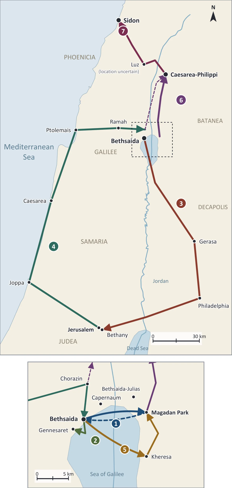
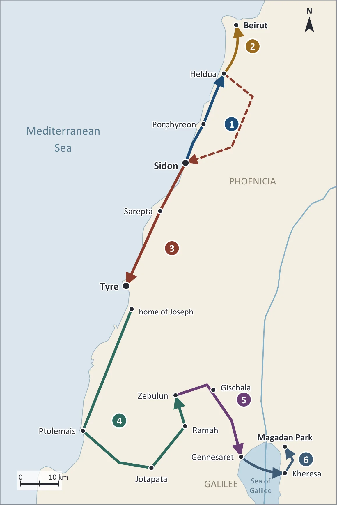
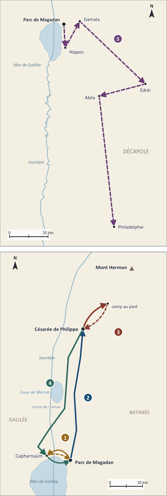
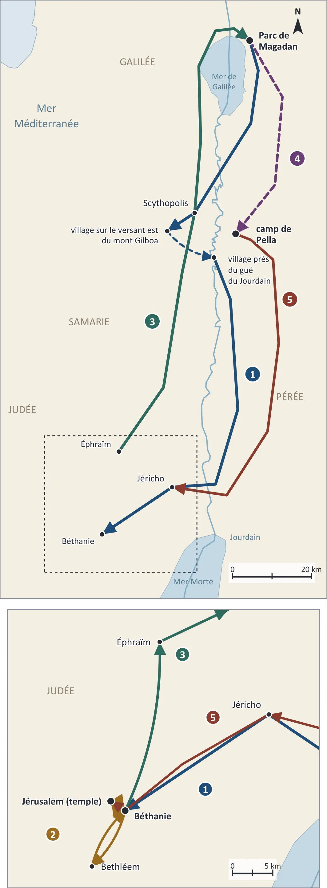
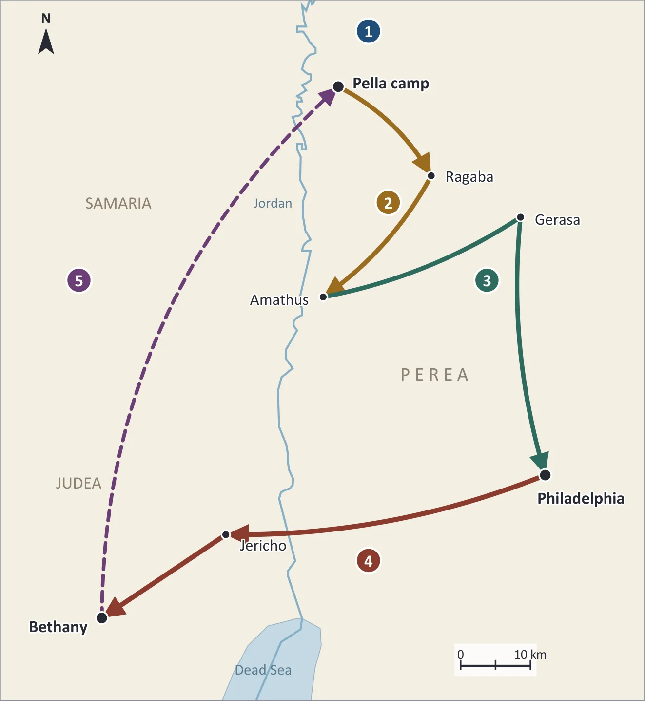
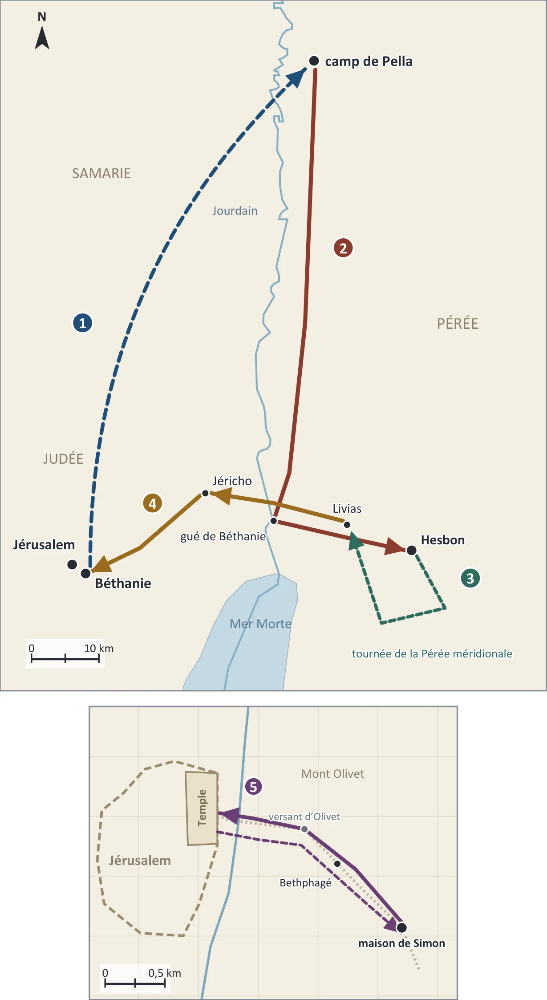

Partie V Les derniers mois du ministère public
Fascicules 152–170
Fascicule 152Les prodromes de la crise de Capharnaümmars – avril de l’an 29
| Évènement | Livre d’Urantia | Bible |
|---|---|---|
| En chemin vers la fille de Jaïre | 152:0.1–3 | Mt 9:1, 18-19; Mc 5:21-24; Lc 8:40-42 |
| Quand le bateau de Jésus revint le mardi matin, une grande foule attendait, et Jaïre, un chef de la synagogue, tomba à ses pieds en le suppliant de guérir sa fille unique, qui était sur le point de mourir. Tandis que Jésus l’accompagnait, la foule suivit, et près de la maison une femme toucha le bord de son vêtement.Diffère de la BibleMatthieu dit que la fille venait de mourir, alors que le Livre d’Urantia, comme Marc et Luc, dit qu’elle était sur le point de mourir, et ajoute que de nouveaux observateurs du sanhédrin se trouvaient dans la foule. | ||
| La femme atteinte d’une hémorragie | 152:0.2–3 | Mt 9:20-22; Mc 5:25-34; Lc 8:43-48 |
| Dans une rue étroite, sur le chemin de la maison de Jaïre, une femme affligée depuis longtemps d’une hémorragie toucha le bord du vêtement de Jésus et fut guérie. Sentant qu’une énergie vivante était sortie de lui, Jésus l’appela et lui dit que sa foi l’avait guérie ; toucher le vêtement n’était que la part superstitieuse, et la guérison venait de la foi.Diffère de la BibleLes Évangiles décrivent une femme anonyme malade depuis douze ans, alors que le Livre d’Urantia la nomme Véronique de Césarée de Philippe et dit que Jésus n’a pas consciemment voulu la guérison et que le geste de toucher le vêtement relevait de la superstition. | ||
| 1. Dans la maison de Jaïre | 152:1.1–5 | Mt 9:23-26; Mc 5:35-43; Lc 8:49-56 |
| Chez Jaïre, un serviteur annonça que la fille était morte, mais Jésus entra avec Pierre, Jacques, Jean et les parents, prit la jeune fille par la main et lui ordonna de s’éveiller et de se lever. Il expliqua qu’elle était dans le coma à la suite d’une longue fièvre et n’avait pas été ressuscitée d’entre les morts, mais les apôtres refusèrent de le croire.Diffère de la BibleLes Évangiles présentent la jeune fille comme morte et rendue à la vie (Luc dit que son esprit revint), alors que le Livre d’Urantia dit que Jésus lui-même expliqua qu’il l’avait seulement tirée du coma. | ||
| Deux aveugles et un garçon muet | 152:1.3 | Mt 9:27-34 |
| Comme Jésus quittait la maison de Jaïre, deux aveugles conduits par un garçon muet le suivirent en criant pour être guéris. La réputation de guérisseur de Jésus était alors à son comble, et il paraissait si épuisé que ses amis craignaient qu’il ne s’effondre.Diffère de la BibleMatthieu dit que les deux aveugles recouvrèrent la vue et qu’un démoniaque muet parla, alors que le Livre d’Urantia dit seulement qu’ils crièrent pour être guéris, ne rapporte aucune guérison et fait du garçon leur guide. | ||
| Carte 27Montée à Jérusalem, puis vers le nordmars – juin de l’an 29 | ||
| 2. Le ravitaillement des cinq-milleCarte 27-① De l’autre côté du lac ; les cinq-mille nourris | 152:2.1–10 | Mt 14:13-21; Mc 6:30-44; Lc 9:10-17; Jn 6:1-13 |
| Le dimanche 27 mars, Jésus et les apôtres traversèrent jusqu’aux parcs au sud de Bethsaïde-Julias pour se reposer, mais le peuple les suivit, au nombre d’environ cinq-mille le mercredi. Avec les cinq pains d’orge et les deux poissons que possédait le jeune Marc, Jésus nourrit la multitude, et les restes remplirent douze paniers.Diffère de la BibleLes Évangiles en font les évènements d’une seule journée, alors que le Livre d’Urantia les situe au troisième jour, sur fond de complot visant à faire Jésus roi, et parle de son premier et unique miracle naturel consciemment prémédité. | ||
| 3. L’épisode de couronnement | 152:3.1–3 | Jn 6:14-15 |
| Quand la multitude rassasiée cria d’une seule voix pour le faire roi, Jésus monta sur un énorme rocher, déclara que son royaume n’est pas de ce monde et leur dit à tous de rentrer chez eux. Beaucoup partirent déçus, et Jésus demanda à André de prier pour Pierre, puis s’en alla seul dans les collines.Diffère de la BibleL’Évangile de Jean dit que Jésus perçut leur intention et se retira discrètement dans les collines, alors que le Livre d’Urantia dit qu’il réprimanda publiquement la multitude et refusa la royauté avant de partir dans les collines. | ||
| 4. La vision nocturne de Simon Pierre | 152:4.1–4 | Mt 14:22-33; Mc 6:45-52; Jn 6:16-21 |
| Ramant cette nuit-là sans leur Maitre, Pierre épuisé s’endormit et rêva que Jésus venait en marchant sur l’eau et que lui-même marchait sur l’eau et s’enfonçait. Dans son rêve, il enjamba réellement le bord du bateau et se réveilla tandis qu’André, Jacques et Jean le repêchaient ; il crut toujours que cette expérience était réelle.Diffère de la BibleLes Évangiles disent que Jésus marcha réellement sur l’eau, alors que le Livre d’Urantia explique qu’il s’agissait du rêve et de la vision de Pierre, et que Luc, y voyant une vision, l’omit de son récit. | ||
| 5. De retour à BethsaïdeCarte 27-② Repos dans la région de Gennésareth | 152:5.1–6 | Aucun |
| Le jeudi matin, Jésus revint à pied à Bethsaïde avec le jeune Marc. Des cinq-mille, environ cinq-cents seulement le suivaient encore ; Jésus réunit les apôtres et les femmes, les réprimanda en disant que les prodiges matériels ne gagnent pas les âmes, puis partit se reposer à Gennésareth. | ||
| 6. À Gennésareth | 152:6.1–6 | Mt 14:34-36; Mc 6:53-55 |
| Se reposant chez un riche croyant de Gennésareth, Jésus tint chaque après-midi des conférences avec les apôtres. Ses disciples, plus de cinquante-mille rien qu’en Galilée, tombèrent en moins d’un mois à moins de cinq-cents, et il enseigna que les appels aux sentiments sont passagers et que seul l’appel à l’esprit intérieur porte du fruit.Diffère de la BibleLes Évangiles disent que les malades de Gennésareth furent guéris en touchant son vêtement, alors que le Livre d’Urantia dit seulement qu’il s’y reposa et enseigna les apôtres, sans mentionner de guérisons. | ||
| 7. À JérusalemCarte 27-③ Montée à Jérusalem pour la PâqueCarte 27-④ Retour par les villes de la côte | 152:7.1–3 | Aucun |
| Le dimanche 3 avril, Jésus partit avec les douze seulement, passa par Gérasa et Philadelphie et atteignit Béthanie le 6 avril ; il interdit tout enseignement public pendant la Pâque. Quittant Jérusalem le 24 avril, ils passèrent par les villes de la côte et revinrent à Bethsaïde le 29 avril. | ||
Carte 27Montée à Jérusalem, puis vers le nord
mars – juin de l’an 29 · Fascicules 152–156

- ①De l’autre côté du lac ; les cinq-mille nourrisLe dimanche 27 mars, ils traversèrent jusqu’à un parc au sud de Bethsaïde-Julias. Après que les cinq-mille eurent été nourris le mercredi, les apôtres revinrent à la rame de nuit et jetèrent l’ancre près de la maison de Zébédée avant l’aube du jeudi (en pointillés). [152:2.1–4; 152:4.1; 152:5.1]
- ②Repos dans la région de GennésarethIls allèrent en bateau prendre deux ou trois jours de repos chez un riche croyant. [152:5.5; 152:6.1]
- ③Montée à Jérusalem pour la PâqueLe dimanche 3 avril, ils quittèrent Bethsaïde par Gérasa et Philadelphie et arrivèrent à Béthanie tard dans la soirée du mercredi 6 avril. [152:7.1–2]
- ④Retour par les villes de la côteLe dimanche 24 avril, ils quittèrent Jérusalem par Joppé, Césarée et Ptolémaïs, puis par voie de terre par Rama et Chorazin jusqu’à Bethsaïde, où ils arrivèrent le vendredi 29 avril. Le lendemain, il parla dans la synagogue de Capharnaüm. [152:7.3; 153:1.1]
- ⑤Échappant à l’arrestation, vers KhérésaLe dimanche matin 22 mai, ils traversèrent à la rame jusqu’aux environs de Khérésa et passèrent la nuit dans le parc situé un peu au nord. [154:7.1–3; 155:0.1]
- ⑥Deux semaines à Césarée de PhilippePartis le lundi 23 mai par la vallée du Jourdain, ils arrivèrent le mardi 24 mai. Pierre et les évangélistes passèrent deux semaines à Chorazin avant de les rejoindre. [155:2.1–3]
- ⑦Par Luz jusqu’à SidonPartis le jeudi 9 juin, ils contournèrent la région des marais par Luz et arrivèrent à Sidon le vendredi après-midi. [155:4.1; 156:0.1]
Fascicule 153La crise à Capharnaümavril de l’an 29
| Évènement | Livre d’Urantia | Bible |
|---|---|---|
| (Introduction) | 153:0.1–3 | Aucun |
| Le vendredi soir de leur retour à Bethsaïde et le matin du sabbat, Jésus était plongé dans ses pensées, mangeant peu et ne disant presque rien. Chaque apôtre se demandait avec anxiété ce qui les attendait, et Jésus quitta ses disciples abattus pour aller prêcher dans la synagogue de Capharnaüm. | ||
| 1. La mise en scène | 153:1.1–7 | Aucun |
| À trois heures de l’après-midi du sabbat, la nouvelle synagogue de Capharnaüm accueillait cinquante-trois pharisiens et sadducéens de Jérusalem, plus de trente dirigeants de synagogues voisines et les observateurs d’Hérode. La crise commencée avec le repas des cinq-mille prit fin avec ce sermon, le tournant de sa popularité, et Jaïre tint parole en laissant Jésus parler. | ||
| 2. Le sermon historique | 153:2.1–13 | Jn 6:22-51 |
| Jésus lut des avertissements du Deutéronome et de Jérémie et fit remarquer que les foules l’avaient suivi pour du pain obtenu sans travail. Montrant le pot de manne sculpté sur le linteau de la synagogue, il se déclara le pain de vie, et quand un éducateur de Jérusalem demanda s’il n’était pas le fils de Joseph, il répondit que le Père et lui sont un.Diffère de la BibleL’Évangile de Jean présente un dialogue avec la foule à Capharnaüm, alors que le Livre d’Urantia en fait un sermon officiel à la synagogue devant des représentants du sanhédrin, commençant par des lectures du Deutéronome et de Jérémie. | ||
| 3. Après la réunion | 153:3.1–7 | Mt 15:1-20; Mc 7:1-23; Jn 6:52-71 |
| Lors de la réunion qui suivit, et qui dura plus de trois heures, un pharisien demanda comment Jésus pouvait donner sa chair à manger, et un espion de Jérusalem lui reprocha de ne pas se laver les mains. Jésus leur reprocha d’annuler le commandement de Dieu par la tradition et déclara que ce qui souille l’homme, c’est le mal qui vient du cœur.Diffère de la BibleLes Évangiles séparent la controverse sur l’ablution des mains du discours sur le pain de vie, alors que le Livre d’Urantia dit que les deux eurent lieu le même jour, lors de la réunion qui suivit le sermon à la synagogue de Capharnaüm. | ||
| « Donne-nous ta chair à manger » : la chair et le sang | 153:3.2 | Jn 6:52-71 |
| Un pharisien, monté sur un support de lampe, cria que, si Jésus était le pain de vie, comment pouvait-il donner sa chair à manger et son sang à boire. Jésus répondit qu’il ne leur avait pas enseigné à manger sa chair et à boire son sang, mais que sa vie dans la chair était une effusion du pain du ciel et que les hommes pouvaient devenir spirituellement un avec lui.Diffère de la BibleL’Évangile de Jean dit que Jésus leur demanda de manger sa chair et de boire son sang, alors que dans le Livre d’Urantia Jésus nie avoir enseigné cela et l’explique comme une unité spirituelle. | ||
| Manger avec des mains non lavées | 153:3.3–6 | Mt 15:1-20; Mc 7:1-23 |
| Quand un espion de Jérusalem accusa Jésus et ses apôtres de manger avec des mains non lavées, Jésus dénonça l’hypocrisie qui consiste à éluder par la tradition le commandement d’honorer ses parents. Ce qui souille l’homme, dit-il, ce n’est pas ce qui entre dans la bouche, mais les mauvaises pensées, l’envie, l’orgueil et la calomnie qui viennent du cœur.Diffère de la BibleLes Évangiles en font une rencontre distincte avec des pharisiens venus de Jérusalem et mentionnent le corban, alors que dans le Livre d’Urantia c’est un espion qui pose la question lors de la réunion qui suivit, et il est ajouté que Pierre surmonta plus tard, grâce à un rêve, sa crainte de l’impureté. | ||
| 4. Dernières paroles dans la synagogue | 153:4.1–6 | Mt 12:22-45; Mc 3:20-30; Lc 11:14-23 |
| Lors de la réunion qui suivit, Jésus chassa un esprit mauvais d’un jeune homme amené par un pharisien de Jérusalem, et les pharisiens l’accusèrent de le faire par le pouvoir de Belzébuth. Jésus répondit qu’un royaume divisé contre lui-même ne peut subsister, mit en garde contre le péché de blasphémer sciemment Dieu et refusa leur demande d’un signe déterminé d’avance.Diffère de la BibleLes Évangiles donnent le signe de Jonas et la parole sur l’esprit qui revient avec sept autres, alors que le Livre d’Urantia dit seulement qu’aucun signe ne serait donné, hormis ce qu’ils verraient quand le Fils de l’Homme partirait. Marc ajoute que sa famille vint pour se saisir de lui. | ||
| La guérison du jeune homme égaré | 153:4.1–3 | Mt 12:22-45; Mc 3:20-30; Lc 11:14-23 |
| Un pharisien de Jérusalem amena un jeune homme possédé d’un esprit indiscipliné et rebelle et demanda si Jésus pouvait chasser les démons ; Jésus ordonna à l’esprit de sortir et plaça un esprit loyal pour garder le jeune homme. Ce fut le premier cas où Jésus chassa un véritable esprit mauvais, et ce genre de possession n’exista que jusqu’à la Pentecôte.Diffère de la BibleLes Évangiles décrivent un possédé aveugle et muet (Luc : muet), alors que le Livre d’Urantia dit qu’il s’agissait d’un jeune homme à l’esprit rebelle et que ce fut le premier cas de véritable possession démoniaque. | ||
| 5. Le samedi soir | 153:5.1–5 | Aucun |
| De retour à Bethsaïde, Jésus ne mangea rien et resta seul dans une chambre haute, et Joab rapporta qu’environ un tiers des évangélistes avaient déserté. Après minuit, Jésus demanda à une trentaine de disciples s’ils voulaient eux aussi s’en aller, et Pierre répondit que le Maitre leur avait enseigné les paroles de la vie éternelle et qu’ils ne le quitteraient jamais. | ||
Fascicule 154Derniers jours à Capharnaümavril – mai de l’an 29
| Évènement | Livre d’Urantia | Bible |
|---|---|---|
| (Introduction) | 154:0.1–3 | Aucun |
| Le samedi soir 30 avril, à Tibériade, des commissaires du sanhédrin pressèrent Hérode Antipas d’arrêter Jésus. Hérode refusa, se fiant au rapport de Chuza et nourrissant une crainte superstitieuse à cause de Jean le Baptiste ; quand ils menacèrent de le dénoncer à César, il les fit sortir de sa salle du conseil. | ||
| 1. Une semaine de conseils | 154:1.1–3 | Aucun |
| Du 1er au 7 mai, Jésus tint conseil matin, après-midi et soir dans la maison de Zébédée avec environ cent disciples éprouvés. Le vendredi, la synagogue de Capharnaüm fut fermée à Jésus et à ses disciples, et Jaïre démissionna de sa charge de chef ; moins de cent-cinquante personnes assistèrent à la dernière réunion au bord du lac, le 7 mai. | ||
| 2. Une semaine de repos | 154:2.1–5 | Aucun |
| Le 8 mai, le sanhédrin décréta que toutes les synagogues de Palestine seraient fermées à Jésus et à ses disciples, et seule la synagogue d’Hébron refusa. Jésus déclara une semaine de vacances et alla pêcher avec David Zébédée ; il soigna lui-même, sans miracle, Nathanael et Jacques Zébédée atteints d’une pénible maladie digestive. | ||
| 3. La deuxième conférence à Tibériade | 154:3.1–2 | Aucun |
| Lors de la deuxième conférence de Tibériade, le 16 mai, Hérode refusa de nouveau d’arrêter Jésus, mais le 18 mai il accepta le plan du sanhédrin, à condition que les gouvernants romains y consentent. Quand la nouvelle de leur consentement arriva dans la nuit du 21 mai, Hérode signa, peu avant minuit, le décret autorisant l’arrestation de Jésus. | ||
| 4. Le samedi soir à Capharnaüm | 154:4.1–6 | Aucun |
| Ce même samedi soir, cinquante notables de Capharnaüm se réunirent à la synagogue et débattirent jusqu’après minuit de ce qu’il fallait faire de Jésus. À part quelques-uns, ils se divisèrent en quatre groupes, le considérant comme un fanatique inoffensif, un agitateur dangereux, un allié des démons ou un homme qui avait perdu la raison. | ||
| 5. Le dimanche matin mouvementé | 154:5.1–4 | Aucun |
| Avant l’aube du dimanche 22 mai, un des messagers de David apporta la nouvelle qu’Hérode avait autorisé l’arrestation de Jésus, et David convoqua une réunion d’urgence pour sept heures. Jésus donna à ses disciples des instructions d’adieu, décida d’emmener avec lui les douze apôtres et les douze évangélistes et, vers sept heures et demie, commença son discours d’adieu devant près de cent croyants. | ||
| 6. La famille de Jésus arrive | 154:6.1–12 | Mt 12:46-50; Mc 3:31-35; Lc 8:19-21 |
| Vers huit heures, Marie, avec Jacques, Joseph, Jude et Ruth, vint à la maison de Zébédée pour ramener Jésus à la maison. Quand le message lui fut transmis, Jésus dit que ceux qui font la volonté de son Père sont sa mère et ses frères, et Marie s’effondra. Avertis que les officiers chargés de l’arrestation arrivaient, Jésus dut partir sans voir sa famille.Diffère de la BibleLes Évangiles le racontent brièvement, alors que le Livre d’Urantia ajoute que les pharisiens avaient monté la famille, que Marie s’effondra en entendant ses paroles et que Jésus avait l’intention de les voir, mais qu’une fuite précipitée l’en empêcha. | ||
| 7. La fuite précipitéeCarte 27-⑤ Échappant à l’arrestation, vers Khérésa | 154:7.1–5 | Aucun |
| Vers huit heures et demie du matin, le 22 mai, Jésus s’enfuit en bateau avec les douze apôtres et les douze évangélistes vers la rive orientale de la mer de Galilée, suivi de six messagers de David. Laissant le bateau près de Khérésa, ils commencèrent les pérégrinations de sa dernière année, se dirigeant par Césarée de Philippe vers la côte de Phénicie. | ||
Fascicule 155En fuite à travers la Galilée du Nordmai – juin de l’an 29
| Évènement | Livre d’Urantia | Bible |
|---|---|---|
| (Introduction) | 155:0.1 | Aucun |
| Après avoir débarqué près de Khérésa le dimanche 22 mai, Jésus et les vingt-quatre allèrent un peu vers le nord et passèrent la nuit dans un parc familier au sud de Bethsaïde-Julias. Avant d’aller se coucher, le Maitre discuta avec eux du projet de passer par la Batanée et la Galilée du Nord pour gagner la côte phénicienne. | ||
| 1. Pourquoi les païens sont-ils furieux ? | 155:1.1–6 | Aucun |
| Cette nuit-là, Jésus cita le Psaume qui demande pourquoi les nations s’agitent, mais il en corrigea les images de colère et de verge de fer, qui ne conviennent pas à son royaume. Les païens concentrent leurs énergies sur leurs buts tandis que les disciples hésitent, dit-il, et il les exhorta à cesser leurs vains désirs et à bâtir le royaume par des vies coordonnées par la vérité. | ||
| 2. Les évangélistes à ChorazinCarte 27-⑥ Deux semaines à Césarée de Philippe | 155:2.1–3 | Aucun |
| Le lundi 23 mai, Pierre alla avec les douze évangélistes à Chorazin, où ils prêchèrent deux semaines mais firent peu de convertis, un baptême d’adversité. Jésus partit avec les onze pour Césarée de Philippe et, quand le groupe de Pierre les rejoignit le 8 juin, il se servit de la parabole du semeur pour enseigner le sens de l’échec apparent. | ||
| 3. À Césarée de Philippe | 155:3.1–8 | Mt 16:13-19, 24 |
| Pendant deux semaines près de Césarée de Philippe, Jésus ne fit aucun travail public, mais s’entretint chaque jour avec les apôtres. Il enseigna que la vérité cristallisée en un credo perd sa vie, que la vraie religion est la loyauté envers ses plus hautes convictions, et mit en garde contre le danger d’accepter des symboles et des cérémonies à la place de l’expérience religieuse.Diffère de la BibleLes Évangiles situent à Césarée de Philippe la confession de Pierre et les paroles sur l’Église et les clefs, alors que dans le Livre d’Urantia ce séjour ne comprend que des entretiens paisibles et de l’enseignement ; la confession de Pierre vient plus tard (157:3). | ||
| 4. Sur la route de PhénicieCarte 27-⑦ Par Luz jusqu’à Sidon | 155:4.1–2 | Aucun |
| Le jeudi 9 juin, les vingt-cinq quittèrent Césarée de Philippe et, passant par Luz, atteignirent Sidon le vendredi après-midi. Pendant qu’ils déjeunaient à l’ombre d’une corniche rocheuse près de Luz, Pierre demanda pourquoi ils fuyaient leurs ennemis, et Thomas demanda en quoi leur religion différait de celle de leurs ennemis de Jérusalem. | ||
| 5. Le discours sur la vraie religion | 155:5.1–16 | Aucun |
| Après le déjeuner, Jésus distingua la religion primitive, religion de la peur ; la religion du mental, fondée sur l’autorité traditionnelle ; et la religion de l’esprit, fondée sur l’expérience personnelle. Contrairement à la religion d’autorité des dirigeants de Jérusalem, la religion de l’esprit exige un effort et l’aventure de la foi, et il envoya les vingt-quatre chercher leur réponse seuls avec le Père. | ||
| 6. Le second discours sur la religion | 155:6.1–19 | Aucun |
| Vers trois heures, à l’ombre d’un flanc de colline, Jésus, à la demande de Pierre, en dit davantage sur la religion de l’esprit. Les religions d’autorité divisent les hommes, mais la religion de l’esprit les unit dans l’expérience au milieu de la diversité des croyances ; les preuves que l’on connait Dieu sont les fruits de l’esprit dans la vie quotidienne et une vie entièrement risquée sur la survie. | ||
Fascicule 156Le séjour à Tyr et à Sidonjuin – juillet de l’an 29
| Évènement | Livre d’Urantia | Bible |
|---|---|---|
| (Introduction) | 156:0.1–2 | Aucun |
| Le vendredi après-midi 10 juin, Jésus et son groupe atteignirent les environs de Sidon et logèrent chez une femme aisée qui avait été soignée à l’hôpital de Bethsaïde. Ils passèrent environ deux semaines et demie dans la région de Sidon et, pendant le paisible sabbat, ils méditèrent sur les discours sur la religion entendus en chemin. | ||
| 1. La femme syrienne | 156:1.1–8 | Mt 15:21-28; Mc 7:24-30 |
| Le sabbat après-midi, Norana, une Syrienne, amena chez Karuska sa fille de douze ans, affligée d’un grave trouble nerveux avec convulsions. Pierre et Thomas tentèrent de la renvoyer et, quand Simon Zélotès dit qu’il ne fallait pas jeter aux chiens le pain des enfants, elle insista en parlant des miettes. Jésus sortit, loua sa foi et guérit la fillette.Diffère de la BibleLes Évangiles font dire à Jésus lui-même qu’il ne faut pas donner aux chiens le pain des enfants, alors que le Livre d’Urantia attribue cette remarque à Simon Zélotès, que Jésus entend par une fenêtre, et décrit un trouble nerveux. | ||
| 2. Enseignement à Sidon | 156:2.1–8 | Aucun |
| En entrant dans Sidon, Jésus dit que ce monde n’est qu’un pont sur lequel on ne doit pas bâtir de demeure. Logé chez Justa, il enseignait chaque matin les vingt-quatre, qui prêchaient à Sidon l’après-midi et le soir, gagnant beaucoup de Gentils. Il enseigna la progression spirituelle et apprécia le sens aigu de l’humour des Gentils. | ||
| Carte 28De Sidon le long de la côte, et jusqu’au parc de Magadanjuin – aout de l’an 29 | ||
| 3. Le voyage en remontant la côteCarte 28-① De Sidon à Porphyréon et HeldoueCarte 28-② Jésus seul à BeyrouthCarte 28-③ Retour à Sidon, puis vers Tyr | 156:3.1–2 | Aucun |
| Le 28 juin, le groupe quitta Sidon et enseigna pendant une semaine le long de la côte à Porphyréon et à Heldoue, tandis que Jésus se rendait à Beyrouth pour rendre visite à un Syrien nommé Malach. Revenus à Sidon le 6 juillet, ils passèrent par Sarepta et atteignirent Tyr le 11 juillet. | ||
| 4. À Tyr | 156:4.1–3 | Aucun |
| Du 11 au 24 juillet, les apôtres et les évangélistes enseignèrent deux par deux à Tyr et dans ses environs, tandis que Jésus établissait son quartier général chez Joseph, au sud de la ville. Quand Jésus prit la parole, une seule fois, l’après-midi du 20 juillet, le temple de Melkarth lui fut ouvert, et beaucoup de dirigeants de la fabrication de la pourpre tyrienne crurent. | ||
| 5. L’enseignement de Jésus à Tyr | 156:5.1–23 | Aucun |
| À Tyr, Jésus enseigna les fondements du caractère spirituel par l’histoire du lis blanc et par sa première et unique parabole sur la charpenterie. Quand Nathanael l’interrogea sur la prière demandant de ne pas être induit en tentation, il répondit que la tentation ne vient pas de Dieu mais de l’égoïsme et doit être surmontée par une nouvelle affection spirituelle. Avant de partir, il renvoya chez eux les douze évangélistes par un autre chemin. | ||
| 6. Le retour de PhénicieCarte 28-④ Ptolémaïs, Jotapata, Rama et ZabulonCarte 28-⑤ Près de Gischala, puis à GennésarethCarte 28-⑥ Par Khérésa jusqu’au parc de Magadan | 156:6.1–10 | Aucun |
| Le 24 juillet, Jésus et les douze passèrent par Ptolémaïs, Jotapata, Rama et Zabulon pour gagner Gennésareth, où ils retrouvèrent David Zébédée, puis tinrent conseil près de Khérésa avec la cinquantaine de dirigeants restants. L’opposition s’était apaisée, et Philippe et Hérode Antipas firent savoir qu’ils n’inquiéteraient pas Jésus hors de Galilée. | ||
Carte 28De Sidon le long de la côte, et jusqu’au parc de Magadan
juin – aout de l’an 29 · Fascicules 156–157

- ①De Sidon à Porphyréon et HeldoueLe mardi 28 juin, ils quittèrent Sidon en remontant la côte. Pendant une semaine, les apôtres prêchèrent à Porphyréon et les évangélistes enseignèrent à Heldoue. [156:3.1]
- ②Jésus seul à BeyrouthPendant ce temps, trois ou quatre jours durant, Jésus se rendit dans la ville côtière de Beyrouth, où il s’entretint avec un Syrien nommé Malach. [156:3.1]
- ③Retour à Sidon, puis vers TyrLe mercredi 6 juillet, ils retournèrent tous à Sidon et séjournèrent chez Justa (en pointillés). Le dimanche matin, ils partirent vers le sud par Sarepta, arrivèrent à Tyr le lundi 11 juillet et y enseignèrent jusqu’au 24 juillet. Jésus établit son quartier général chez Joseph, au sud de Tyr. [156:3.2; 156:4.1]
- ④Ptolémaïs, Jotapata, Rama et ZabulonVers midi le dimanche 24 juillet, ils quittèrent la maison de Joseph et s’arrêtèrent une journée à Ptolémaïs. Le mardi, ils s’enfoncèrent dans l’intérieur par la route de Tibériade jusqu’aux environs de Jotapata ; le jeudi, par la piste de Nazareth au mont Liban, jusqu’à Rama, où ils restèrent pendant le sabbat, et ils atteignirent Zabulon le dimanche 31. [156:6.1–2]
- ⑤Près de Gischala, puis à GennésarethQuittant Zabulon, ils allèrent jusqu’au croisement de la route de Magdala à Sidon près de Gischala, et de là à Gennésareth, sur la rive occidentale au sud de Capharnaüm, pour rencontrer David Zébédée. [156:6.3]
- ⑥Par Khérésa jusqu’au parc de MagadanLe soir même, un bateau les fit traverser jusqu’aux environs de Khérésa. Après une journée de repos dans les collines, ils continuèrent jusqu’au parc où les cinq-mille avaient été nourris et y tinrent des conférences pendant trois jours. [156:6.4; 157:2.1]
Fascicule 157À Césarée de Philippeaout de l’an 29
| Évènement | Livre d’Urantia | Bible |
|---|---|---|
| Carte 29La transfiguration sur le mont Hermon et la tournée de la Décapoleaout – septembre de l’an 29 | ||
| (Introduction)Carte 29-① Traversée vers Capharnaüm | 157:0.1–2 | Aucun |
| Jésus avait prévu de rencontrer toute sa famille de Nazareth le dimanche 7 aout au chantier naval de Zébédée à Capharnaüm. Mais des pharisiens de Jérusalem campaient sur le perron de la maison de Marie et la surveillaient, si bien que la famille ne put sortir ; Jésus renonça à la visite et, une fois de plus, ils ne réussirent pas à se rencontrer. | ||
| 1. Le percepteur de l’impôt du temple | 157:1.1–5 | Mt 17:24-27 |
| Au bord du lac, près du chantier naval, un percepteur de l’impôt du temple demanda à Pierre si Jésus payait l’impôt du temple, et Pierre promit précipitamment que oui. N’ayant pas d’argent, Jésus lui dit de pêcher des poissons et de les vendre pour payer l’impôt pour eux trois ; un messager de David et son ami pêcheur remirent à Pierre des paniers de poissons, et l’impôt fut ainsi payé.Diffère de la BibleMatthieu rapporte le miracle d’un sicle trouvé dans la bouche d’un poisson, alors que le Livre d’Urantia dit que l’impôt fut payé par la vente de poissons avec l’aide du messager, et que l’histoire du sicle naquit d’une remarque à demi plaisante de Jésus. | ||
| 2. À Bethsaïde-Julias | 157:2.1–2 | Mt 15:39; 16:1-12; Mc 8:10-21 |
| Le lundi 8 aout, plus de cent croyants, les évangélistes, le corps évangélique féminin et des pharisiens se réunirent au parc de Magadan près de Bethsaïde-Julias. Après avoir repoussé, lors de la réunion publique, une demande de signe, Jésus tint le soir une conférence qui décida d’une mission commune dans la Décapole, et il les avertit de se garder du levain des pharisiens et des sadducéens.Diffère de la BibleLes Évangiles placent l’avertissement sur le levain dans une conversation dans le bateau avec des disciples qui avaient oublié le pain, alors que le Livre d’Urantia le présente comme une longue exhortation à la fin de la conférence du soir, sans mention du pain. | ||
| Des pharisiens demandent un signe d’autoritéCarte 29-② Vers Césarée de Philippe | 157:2.1–2 | Mt 15:39; 16:1-12; Mc 8:10-21 |
| Lors de la réunion publique qui précéda la conférence privée, des pharisiens chahutèrent et perturbèrent l’assemblée, et leur chef exigea un signe de l’autorité de Jésus pour enseigner. Jésus répondit qu’ils savaient discerner l’aspect du ciel, mais non les signes des temps, et qu’aucun signe ne serait donné à une génération hypocrite.Diffère de la BibleMatthieu dit qu’aucun signe ne sera donné sinon le signe de Jonas, alors que le Livre d’Urantia ne mentionne pas Jonas et ajoute qu’un signe a déjà été donné à ceux qui voudraient connaitre la vérité. | ||
| 3. La confession de Pierre | 157:3.1–7 | Mt 16:13-17; Mc 8:27-30; Lc 9:18-21 |
| Le mardi, en chemin vers Césarée de Philippe, Jésus et les douze s’assirent sous des mûriers pour le déjeuner, et il demanda pour la première fois : « Qui dit-on que je suis ? » Quand il leur demanda qui, selon eux, il était, Simon Pierre s’écria qu’il était le Libérateur, le Fils du Dieu vivant, et les onze autres se levèrent pour l’approuver.Diffère de la BibleLes Évangiles situent cette scène dans la région de Césarée de Philippe, alors que le Livre d’Urantia la place au déjeuner en chemin, fait dire à Pierre « Libérateur » plutôt que « Christ », et dit que les onze se levèrent pour s’associer à la confession. | ||
| 4. Propos au sujet du royaume | 157:4.1–8 | Mt 16:18-20 |
| À midi, le mercredi, dans le jardin de Celsus, Jésus demanda si les apôtres maintenaient encore la déclaration de Pierre, et Pierre affirma de nouveau qu’il était le Fils de Dieu. Jésus dit que cette confession était une révélation de l’esprit de son Père et que sur ce roc il bâtirait la fraternité spirituelle, et il donna aux apôtres les clefs du royaume extérieur.Diffère de la BibleMatthieu dit que Jésus donna personnellement à Pierre le roc et les clefs du royaume pour bâtir l’Église, alors que le Livre d’Urantia dit que, le lendemain, il fonda la fraternité spirituelle sur la confession des douze, les clefs signifiant l’autorité sur les questions sociales et économiques. | ||
| 5. Le nouveau concept | 157:5.1–3 | Aucun |
| Ce qui était nouveau dans la confession de Pierre, c’était la claire reconnaissance de la divinité de Jésus comme Fils de Dieu. Comme le concept juif du Messie ne comportait aucune divinité, Jésus renonça à essayer de modifier ce concept et choisit de révéler sa divinité, bâtissant le royaume sur la nature conjuguée du Fils de l’Homme et du Fils de Dieu. | ||
| 6. L’après-midi suivant | 157:6.1–15 | Aucun |
| Jésus et les apôtres restèrent encore un jour chez Celsus, et ce soir-là les messagers de David Zébédée arrivèrent avec de l’argent. Avec la confession de Pierre, Jésus entra dans la quatrième et dernière étape de sa vie terrestre, et dans le jardin il fit de nouvelles déclarations sur les obligations de la filiation, son unité avec le Père et son départ prochain. | ||
| 7. La consultation d’André | 157:7.1–5 | Aucun |
| Ce soir-là, André s’entretint en particulier avec chacun des apôtres sauf Judas Iscariot et, troublé par l’attitude de Judas, il en parla à Jésus tard dans la nuit. Jésus lui dit de continuer à faire confiance à Judas et de n’en rien dire à personne. Le vendredi matin 12 aout, Jésus dit aux apôtres de se préparer à aller au mont Hermon. | ||
Carte 29La transfiguration sur le mont Hermon et la tournée de la Décapole
aout – septembre de l’an 29 · Fascicules 157–159

- ①Traversée vers CapharnaümLe dimanche 7 aout, Jésus traversa avec André et Pierre pour rencontrer sa famille, mais la rencontre n’eut pas lieu. L’impôt du temple fut payé et, à la tombée de la nuit, ils revinrent à la rame vers la rive orientale (en pointillés). [157:0.1–2; 157:1.1–5]
- ②Vers Césarée de PhilippeLe lundi 8 aout, conférence au parc ; ils partirent tôt le mardi matin. En passant au sud des eaux de Mérom, Jésus demanda : « Qui dit-on que je suis ? » Tard ce soir-là, ils atteignirent la maison de Celsus. [157:2.1; 157:3.1–7]
- ③La transfiguration sur le mont HermonVers le coucher du soleil, le vendredi 12 aout, ils atteignirent le pied du mont Hermon. Le lundi 15 aout, Jésus et trois apôtres commencèrent l’ascension. Le mardi matin, ils redescendirent au camp ; le garçon affligé fut guéri, et ils passèrent la nuit chez Celsus (en pointillés). [158:0.1; 158:1.1; 158:4.1; 158:5.1; 158:6.1]
- ④Par Capharnaüm jusqu’au parc de MagadanPartis tôt le mercredi matin, ils prirent, juste au-delà des eaux de Mérom, la route de Damas vers Capharnaüm. Au crépuscule, ils se rendirent chez Simon Pierre, puis traversèrent le lac jusqu’au parc de Magadan. [158:7.1; 158:7.9; 158:8.1; 159:0.1]
- ⑤La tournée de la DécapoleLe jeudi 18 aout, douze groupes partirent travailler à Gérasa, Gamala, Hippos, Zaphon, Gadara, Abila, Édréi, Philadelphie, Hesbon, Dium, Scythopolis et d’autres villes. Jésus rendit visite aux groupes de Hippos, Gamala, Édréi, Abila et Philadelphie (les routes ne figurent pas dans le texte ; en pointillés). Le vendredi 16 septembre, tous se réunirent de nouveau au parc de Magadan. [159:0.2; 159:1.1; 159:2.1; 159:3.1; 159:4.1; 159:5.1; 159:6.2]
Fascicule 158Le mont de la transfigurationaout de l’an 29
| Évènement | Livre d’Urantia | Bible |
|---|---|---|
| (Introduction)Carte 29-③ La transfiguration sur le mont Hermon | 158:0.1–2 | Aucun |
| Vers le coucher du soleil, le vendredi 12 aout de l’an 29, Jésus et les apôtres atteignirent le pied du mont Hermon et passèrent deux jours en préparation spirituelle. Jésus souhaitait que tous les apôtres partagent l’expérience de la montagne mais, comme ils ne pouvaient atteindre ce niveau, il choisit de n’emmener que Pierre, Jacques et Jean, qui l’accompagnaient habituellement dans ses veilles nocturnes. | ||
| 1. La transfiguration | 158:1.1–10 | Mt 17:1-8; Mc 9:2-8; Lc 9:28-36 |
| Le lundi 15 aout, Jésus gravit le mont Hermon avec les trois apôtres et, l’après-midi, se retira seul pour rencontrer Gabriel et le Père Melchizédek. Réveillés pendant la nuit, les apôtres virent Jésus resplendissant s’entretenir avec deux êtres éclatants et, tandis que Pierre proposait de dresser trois tentes, une nuée argentée les couvrit et une voix dit : « Celui-ci est mon Fils bienaimé. »Diffère de la BibleLes Évangiles disent que Moïse et Élie apparurent, alors que le Livre d’Urantia dit que ces êtres étaient en réalité Gabriel et le Père Melchizédek, et que Pierre les prit à tort pour Moïse et Élie. | ||
| 2. En descendant de la montagne | 158:2.1–5 | Mt 17:9-13; Mc 9:9-13 |
| En descendant de la montagne, Jésus leur ordonna de ne dire à personne ce qu’ils avaient vu jusqu’à ce que le Fils de l’Homme soit ressuscité des morts. Pierre détourna la conversation en demandant si Élie doit venir d’abord, et Jésus répondit qu’Élie était déjà venu mais n’avait pas été reçu ; les trois comprirent qu’il parlait de Jean le Baptiste.Diffère de la BibleLes Évangiles disent que les disciples posèrent simplement la question au sujet d’Élie, alors que le Livre d’Urantia explique que Pierre la posa pour détourner la conversation de la mort et de la résurrection de Jésus. | ||
| 3. Le sens de la transfiguration | 158:3.1–6 | Aucun |
| Lors de la transfiguration, le Fils Éternel, par Gabriel, accepta la plénitude de l’effusion de Micaël, et l’Esprit Infini, par le Père Melchizédek, en témoigna sa satisfaction. Le Père n’indiqua pas que l’effusion était achevée, mais rendit seulement témoignage par l’Ajusteur : « Celui-ci est mon Fils bienaimé », et Jésus décida de poursuivre l’effusion mortelle jusqu’à son terme naturel. | ||
| 4. Le garçon épileptique | 158:4.1–8 | Mt 17:14-20; Mc 9:14-29; Lc 9:37-43 |
| Le mardi matin, Jésus arriva au camp et trouva les neuf apôtres, des scribes de Jérusalem et une cinquantaine d’autres personnes en pleine dispute. La veille, Jacques de Safed avait amené son fils unique, âgé d’environ quatorze ans, atteint d’épilepsie et possédé par un médian errant ; Simon Zélotès, puis André, avaient tenté de chasser l’esprit et avaient échoué, sous les railleries des scribes.Diffère de la BibleLes Évangiles disent seulement que les disciples ne purent guérir le garçon, alors que le Livre d’Urantia précise que les apôtres s’étaient disputés pour savoir qui serait le plus grand, et que Simon Zélotès essaya au nom de Jésus, puis André, et que tous deux échouèrent. | ||
| 5. Jésus guérit le garçon | 158:5.1–5 | Mt 17:14-20; Mc 9:14-29; Lc 9:37-43 |
| Quand Jésus revint, Jacques de Safed s’agenouilla et le supplia de guérir son fils. Jésus réprimanda la génération incrédule et dit que tout est possible à celui qui croit vraiment ; quand le père demanda de l’aide pour son incrédulité, Jésus prit le garçon par la main et chassa l’esprit, guérissant à la fois l’épilepsie et la possession.Diffère de la BibleLes Évangiles le présentent seulement comme l’expulsion d’un démon, alors que le Livre d’Urantia parle d’une double guérison, celle d’une épilepsie physique et celle d’un mal spirituel dû à la possession par un médian, sans parole sur la foi grande comme un grain de sénevé ni sur la prière. | ||
| 6. Dans le jardin de Celsus | 158:6.1–6 | Aucun |
| Ce soir-là, chez Celsus, Thomas demanda à Jésus d’expliquer l’échec des apôtres. Jésus fit remarquer qu’ils avaient cédé à la tentation de rechercher de hautes positions dans un royaume matériel, si bien que leurs mobiles et leurs idéaux n’étaient pas spirituels, et il déclara que le Fils de l’Homme serait mis à mort, mais qu’il ressusciterait. | ||
| 7. La protestation de PierreCarte 29-④ Par Capharnaüm jusqu’au parc de Magadan | 158:7.1–9 | Mt 16:21-28; Mc 8:31-38; 9:1; Lc 9:22-27 |
| Le mercredi, Jésus et les douze quittèrent Césarée de Philippe et traversèrent la Galilée par la route de Damas en direction de Capharnaüm. Quand André l’interrogea sur ses paroles concernant la mort, Jésus révéla qu’il serait rejeté et tué à Jérusalem et qu’il ressusciterait ; il réprimanda Pierre, qui protestait, en disant « Passe derrière moi », et enseigna que quiconque perd sa vie la sauvera.Diffère de la BibleLes Évangiles font appeler Pierre « Satan » par Jésus et lui font demander de prendre sa croix, alors que dans le Livre d’Urantia il dit qu’ils tiennent tous de l’esprit de l’adversaire et leur demande de prendre quotidiennement leurs responsabilités ; cela se passe sur le chemin du retour de Césarée de Philippe. | ||
| 8. Chez Pierre | 158:8.1–2 | Mt 18:1-10; Mc 9:33-37, 42-47; Lc 9:46-48 |
| Au crépuscule, dans la maison de Simon Pierre à Capharnaüm, Jésus demanda de quoi ils avaient discuté en chemin, et les apôtres, qui s’étaient disputés pour savoir qui serait le plus grand, gardèrent le silence. Plaçant au milieu d’eux un des petits enfants de Pierre, Jésus enseigna que quiconque s’humilie comme cet enfant est le plus grand, puis ils traversèrent vers Magadan.Diffère de la BibleMatthieu dit que les disciples demandèrent d’abord qui est le plus grand, alors que le Livre d’Urantia, comme Marc, fait poser la question d’abord par Jésus, fait de l’enfant l’un de ceux de Pierre et parle d’être exclu du royaume plutôt que du feu de la géhenne. | ||
| Quiconque fait trébucher l’un de ces petits | 158:8.1 | Lc 17:1-2 |
| Au même endroit, Jésus avertit que, pour quiconque fait trébucher l’un de ces petits, il vaudrait mieux être jeté à la mer avec une meule au cou. Si les mains ou les yeux sont une occasion de chute dans le progrès du royaume, il faut sacrifier ces idoles chéries, et les anges des petits contemplent toujours le visage des armées célestes.Diffère de la BibleLuc place cet avertissement aux disciples dans une autre occasion, alors que le Livre d’Urantia le donne comme faisant partie de l’enseignement avec l’enfant dans la maison de Pierre à Capharnaüm. | ||
Fascicule 159La tournée en Décapoleaout – septembre de l’an 29
| Évènement | Livre d’Urantia | Bible |
|---|---|---|
| Départ pour la tournée de la DécapoleCarte 29-⑤ La tournée de la Décapole | 159:0.1–2 | Mc 7:31 |
| Au parc de Magadan, près de cent évangélistes et disciples, y compris le corps évangélique féminin, attendaient. Le jeudi 18 aout, Jésus associa chaque apôtre à un évangéliste et les envoya en douze groupes travailler pendant quatre semaines dans les villes de la Décapole, comme Gérasa, Gamala et Hippos, avec retour prévu le 16 septembre.Diffère de la BibleMarc dit seulement que Jésus traversa la Décapole, alors que le Livre d’Urantia décrit une mission organisée de quatre semaines, menée par douze groupes dans de nombreuses villes, au cours de laquelle aucun miracle ne fut accompli. | ||
| 1. Le sermon sur le pardon | 159:1.1–7 | Mt 18:12-35; Lc 15:3-7 |
| Un soir à Hippos, en réponse à la question d’un disciple, Jésus enseigna sur le pardon. Puisque le Père va à la recherche des pécheurs avant même qu’ils ne pensent à se repentir, ses enfants doivent se pardonner les uns aux autres ; quand Pierre demanda combien de fois il faut pardonner, Jésus répondit par la parabole de l’intendant qui, après avoir été tenu quitte de sa dette, fit emprisonner son compagnon.Diffère de la BibleMatthieu place cet enseignement dans une conversation avec les disciples pendant la période de Capharnaüm, alors que le Livre d’Urantia le situe dans un discours du soir à Hippos pendant la mission de la Décapole. | ||
| Les cent brebis et celle qui s’égare | 159:1.2 | Mt 18:12-14; Lc 15:3-7 |
| Jésus parla du berger qui laisse les quatre-vingt-dix-neuf pour chercher la brebis perdue jusqu’à ce qu’il la trouve et la rapporte joyeusement à la maison, et il dit qu’il y a plus de joie au ciel pour un seul pécheur qui se repent. Dans l’évangile du royaume, enseigna-t-il, le Père va à la recherche des pécheurs avant même qu’ils ne pensent au repentir.Diffère de la BibleCe point ne se trouve pas dans la Bible : le Livre d’Urantia ajoute que Dieu ne se contente pas d’accueillir ceux qui se repentent, mais va les chercher avant même qu’ils ne pensent à se repentir. | ||
| Si ton frère pèche contre toi | 159:1.3 | Mt 18:15-20 |
| Jésus dit que, si un frère pèche, il faut d’abord aller le trouver seul, puis avec un ou deux amis et, s’il refuse encore d’écouter, le dire à la fraternité pour qu’elle agisse. La fraternité ne peut ni juger les âmes ni pardonner les péchés, mais elle peut trancher les questions d’ordre temporel et de discipline, et il serait présent partout où deux ou trois croyants sont réunis.Diffère de la BibleMatthieu étend le pouvoir de lier et de délier de l’Église à tout ce qu’elle décide, alors que le Livre d’Urantia précise que ce pouvoir exclut le jugement des âmes et le pardon des péchés et se limite à la discipline temporelle de la fraternité. | ||
| L’intendant qui devait cent deniers | 159:1.4–5 | Mt 18:21-35 |
| Simon Pierre, responsable des travailleurs à Hippos, demanda s’il fallait pardonner sept fois, et Jésus répondit : soixante-dix fois sept fois. Dans la parabole, un intendant en chef, tenu quitte de dix-mille talents, fit jeter en prison un autre intendant qui lui devait cent deniers, et le roi le livra aux geôliers ; Jésus enseigna que la miséricorde doit être accordée libéralement.Diffère de la BibleL’intrigue de la parabole est la même, mais Matthieu conclut par l’avertissement que le Père agira de même envers ceux qui ne pardonnent pas, alors que le Livre d’Urantia conclut en disant qu’une miséricorde plus abondante attend ceux qui font miséricorde. | ||
| 2. Le prédicateur étranger | 159:2.1–4 | Mc 9:38-41; Lc 9:49-50 |
| Jésus se rendit à Gamala pour visiter Jean et ses compagnons. Quand Jean lui dit qu’il avait interdit à un homme d’Ashtarot d’enseigner et de chasser des démons au nom de Jésus, Jésus lui dit de ne pas le lui interdire, car celui qui n’est pas contre nous est pour nous. Cet homme, Aden, continua son œuvre et suscita de nombreux croyants à Kanata.Diffère de la BibleLes Évangiles parlent brièvement d’un homme anonyme, alors que le Livre d’Urantia ajoute qu’il s’agissait d’Aden, venu à la foi grâce au témoignage du dément de Khérésa, qu’il ne tint pas compte de l’interdiction et qu’il rassembla des croyants à Kanata. | ||
| 3. Instructions pour les éducateurs et les croyants | 159:3.1–14 | Aucun |
| À Édréi, Jésus passa un jour et une nuit avec Thomas et ses compagnons, enseignant les principes destinés à ceux qui prêchent la vérité. Ils doivent respecter la personnalité et le respect de soi, ne jamais effrayer les gens pour les faire entrer dans le royaume ni compter sur les appels émotionnels, ne pas confondre des sentiments forts avec la conduite de l’esprit, et savoir que les croyants ne sont pas épargnés par les épreuves, mais qu’ils les traverseront avec lui. | ||
| 4. L’entretien avec Nathanael | 159:4.1–11 | Aucun |
| À Abila, quand Nathanael l’interrogea en privé sur la vérité des Écritures, Jésus lui répondit à l’écart. Les Écritures sont l’œuvre des hommes et sont imparfaites, mais elles constituent la meilleure collection de sagesse religieuse, et des récits tels que l’ordre de massacrer tous les ennemis ne sont pas la parole de Dieu. Seuls les Créateurs possèdent l’infaillibilité, et l’autorité de la vérité, c’est l’esprit vivant. | ||
| 5. Le caractère positif de la religion de Jésus | 159:5.1–17 | Aucun |
| À Philadelphie, quand Jacques demanda comment choisir les meilleurs passages des Écritures, Jésus donna plusieurs exemples. Il introduisit l’esprit d’action positive dans les doctrines passives de la religion juive, enseignant que tendre l’autre joue et faire le second mille sont des actes positifs pour vaincre le mal par le bien. | ||
| 6. Le retour à Magadan | 159:6.1–5 | Aucun |
| La mission de quatre semaines dans la Décapole eut un succès modéré, et des centaines de personnes furent reçues dans le royaume. Le vendredi 16 septembre, tout le corps se réunit au parc de Magadan et, le jour du sabbat, plus de cent croyants tinrent conseil. Abner transféra sa base à Bethléem, et Jésus et ses compagnons se préparèrent à une dernière semaine de repos. | ||
Fascicule 160Rodan d’Alexandrieseptembre de l’an 29
| Évènement | Livre d’Urantia | Bible |
|---|---|---|
| (Introduction) | 160:0.1 | Aucun |
| Le dimanche 18 septembre, André annonça qu’aucun travail n’était prévu pour la semaine, et tous les apôtres sauf Nathanael et Thomas rentrèrent chez eux. Jésus se reposa presque complètement, laissant Nathanael et Thomas discuter avec Rodan, un philosophe grec d’Alexandrie venu à Magadan, l’écouter et lui enseigner l’évangile. | ||
| 1. La philosophie grecque de Rodan | 160:1.1–15 | Aucun |
| À partir du lundi, Rodan fit dix exposés devant Nathanael, Thomas et environ deux douzaines de croyants. La vie humaine, dit-il, consiste en impulsions, en désirs et en attraits, et la maturité réside dans leur conversion en idéaux plus élevés ; la plus grande méthode de résolution des problèmes qu’il avait apprise de Jésus est l’isolement de la méditation adoratrice. | ||
| 2. L’art de vivre | 160:2.1–10 | Aucun |
| Rodan enseigna que les humains construisent la personnalité et la culture en communiquant des significations et des valeurs par des symboles. Les associations d’amitié et d’affection mutuelle, et avant tout le mariage, sont essentielles à l’art de vivre, car elles favorisent l’expression de soi et la compréhension, l’union des âmes, l’enthousiasme de vivre et la défense contre le mal. | ||
| 3. Les attraits de la maturité | 160:3.1–5 | Aucun |
| Rodan dit que l’énergie nécessaire à la maturité ne vient pas de l’excitation émotionnelle, mais de l’adoration, qui unit la méditation et la détente dans la communion spirituelle. Quand cette pratique devient une habitude, elle forme le caractère spirituel, et la manière du Maitre de trouver, par le tact et la tolérance, la clef d’une porte fermée vaut mieux que la lutte. | ||
| 4. L’équilibre de la maturité | 160:4.1–16 | Aucun |
| Rodan dit que, tout en cherchant les réalités éternelles, il faut pourvoir aux nécessités de la vie temporelle : la santé, la clarté de pensée, l’aptitude et l’habileté, la richesse, la capacité de supporter la défaite, et la culture. Il faut apprendre à échouer avec grâce, et pour l’homme qui cherche Dieu l’échec n’est qu’un épisode éducatif dans l’acquisition de la sagesse. | ||
| 5. La religion de l’idéal | 160:5.1–14 | Aucun |
| Rodan définit la religion comme l’expérience de réagir à ce qui est digne de la dévotion de toute l’humanité, soutenant que la vraie religion repose sur l’expérience spirituelle et ne peut exister sans l’idéal suprême du Dieu éternel. Professant la religion de Jésus comme le plus haut concept de la religion, il déclara que lui aussi s’était engagé dans cette aventure éternelle. | ||
Fascicule 161Suite des discussions avec Rodanseptembre de l’an 29
| Évènement | Livre d’Urantia | Bible |
|---|---|---|
| Carte 30Le quartier général transféré à Pella, et visites à Jérusalemseptembre – décembre de l’an 29 | ||
| (Introduction)Carte 30-① Montée à Jérusalem pour la fête des Tabernacles | 161:0.1–2 | Aucun |
| Le dimanche 25 septembre de l’an 29, à Magadan, Jésus annonça que le lendemain il partirait avec les douze apôtres pour Jérusalem afin d’assister à la fête des Tabernacles. Il chargea les évangélistes de visiter les croyants de Galilée et le corps évangélique féminin de retourner à Bethsaïde, tandis que Nathanael et Thomas restaient quelques jours à Magadan pour poursuivre leurs discussions avec Rodan. | ||
| 1. La personnalité de Dieu | 161:1.1–11 | Aucun |
| Rodan soutenait que la personnalité exige une communication entre égaux et que Dieu, n’ayant pas d’égal, ne peut donc pas être une personne. Le mardi soir, Nathanael l’avait convaincu par des arguments comme la communication du Père avec le Fils Éternel et l’Esprit Infini, et celle de Jésus à la fois avec le Père et avec les hommes, et Rodan reconnut Dieu comme une personne. | ||
| 2. La nature divine de Jésus | 161:2.1–12 | Aucun |
| Nathanael et Thomas expliquèrent à Rodan la nature divine de Jésus. Invoquant son amitié sans faille et sa vie sans péché, sa parfaite maitrise émotionnelle, sa connaissance surhumaine, son autorité d’éducateur divin, sa prétention d’être un avec le Père et sa prière comme face à face, ils dirent qu’il était à la fois Fils de l’Homme et Fils de Dieu. Rodan donna plus tard sa vie en Grèce. | ||
| 3. Le mental humain et le mental divin de Jésus | 161:3.1–3 | Aucun |
| La conscience de divinité de Jésus grandit progressivement jusqu’à son baptême, après quoi il semble avoir pu choisir soit de se fier uniquement à son mental humain, soit d’utiliser aussi la connaissance du mental divin. Il cachait souvent à ses compagnons sa prescience et son discernement des pensées, et les rapporteurs ne peuvent distinguer pleinement ces deux techniques ni percer tout le mystère. | ||
Carte 30Le quartier général transféré à Pella, et visites à Jérusalem
septembre – décembre de l’an 29 · Fascicules 161–164

- ①Montée à Jérusalem pour la fête des TabernaclesAnnoncée le dimanche 25 septembre ; ils partirent tôt le lendemain. Ils descendirent la rive orientale du lac et, par Scythopolis, entrèrent sur le territoire de la Samarie. Refusés pour la nuit dans un village des pentes orientales du mont Gilboa, ils s’arrêtèrent pour la nuit au village proche du gué du Jourdain. Tôt le lendemain, ils traversèrent le fleuve et prirent la grand-route de l’est du Jourdain, arrivant à Béthanie tard le mercredi soir. [161:0.1; 162:0.1–3]
- ②Enseignement au temple ; Abner à BethléemPendant la fête, Jésus enseigna publiquement au temple à plusieurs reprises. Il partagea son temps à peu près également entre Béthanie et Bethléem, où Abner avait établi son quartier général. [162:1.2; 162:2.10; 162:9.1–4]
- ③D’Éphraïm au parc de MagadanDans la seconde quinzaine d’octobre, ils se retirèrent des environs de Jérusalem et se reposèrent quelques jours à Éphraïm. Partis le dimanche 30 octobre par la grand-route de l’ouest du Jourdain, ils arrivèrent tard le mercredi 2 novembre. Le 19 novembre, les soixante-dix furent ordonnés. [162:9.6; 163:1.1]
- ④Le quartier général transféré au camp de PellaLe mardi 6 décembre, près de trois-cents personnes partirent à l’aube pour passer la nuit près de Pella, au bord du fleuve, près de la source où Jean le Baptiste avait jadis campé (l’itinéraire ne figure pas dans le texte ; en pointillés). [163:5.1]
- ⑤En secret à Jérusalem pour la fête de la DédicaceAvec Nathanael et Thomas, Jésus traversa le Jourdain au gué de Béthanie et logea à Jéricho. Le vendredi soir, il rencontra des dirigeants chez Nicodème ; le matin du sabbat, après un petit déjeuner à Béthanie, il guérit Josias, aveugle de naissance, près du temple. Avec Josias, il retourna à Pella. [164:0.1–2; 164:2.1; 164:3.1; 164:5.6]
Fascicule 162À la fête des Tabernaclesoctobre de l’an 29
| Évènement | Livre d’Urantia | Bible |
|---|---|---|
| Jacques et Jean voudraient faire descendre le feu | 162:0.1–4 | Lc 9:51-56 |
| Jésus et les dix apôtres avaient prévu d’aller à Jérusalem par la Samarie, mais un village des pentes orientales du mont Gilboa leur refusa l’hébergement parce qu’ils étaient juifs et chassa Philippe et Matthieu. Quand Jacques et Jean demandèrent à faire descendre le feu du ciel, Jésus les réprimanda sévèrement ; ils logèrent dans un village près du gué du Jourdain et atteignirent Béthanie le mercredi.Diffère de la BibleL’Évangile de Luc dit seulement que des messagers furent envoyés en avant, alors que le Livre d’Urantia précise que Philippe et Matthieu parlèrent avec indignation du Saint d’Israël et furent chassés à coups de bâtons et de pierres. | ||
| 1. Les dangers de la visite à JérusalemCarte 30-② Enseignement au temple ; Abner à Bethléem | 162:1.1–11 | Aucun |
| Devant la décision soudaine d’assister à la fête des Tabernacles à Jérusalem, les apôtres craignirent pour sa vie, mais Jésus répondit que l’heure était maintenant venue. Grâce à la division au sein du sanhédrin, aux efforts des associés d’Abner et à sa propre hardiesse, il put enseigner publiquement dans les cours du temple, ce qui était une proclamation ouverte de sa divinité. | ||
| 2. La première discussion au temple | 162:2.1–10 | Jn 7:1-36 |
| Le premier après-midi où Jésus enseigna au temple, comme on lui demandait comment il pouvait enseigner sans avoir étudié auprès des rabbins, il répondit que son enseignement était celui de Celui qui l’avait envoyé. Il répondit aussi à la question de savoir pourquoi les dirigeants cherchaient à le tuer et s’il était le Messie, et Eber, l’officier du sanhédrin envoyé pour l’arrêter, fut si ému qu’il refusa de le faire.Diffère de la BibleL’Évangile de Jean dit que Jésus monta en secret après que ses frères l’eurent pressé, alors que le Livre d’Urantia dit qu’il y alla avec les apôtres, nomme Eber l’officier venu l’arrêter et revenu sans lui, et rapporte sa protestation. | ||
| 3. La femme surprise en adultère | 162:3.1–5 | Jn 7:53; 8:1-11 |
| Le troisième matin de la fête, des agents du sanhédrin trainèrent devant Jésus une femme qu’on disait surprise en adultère, pour le prendre au piège. Jésus écrivit trois fois sur le sable, ce qui fit partir tour à tour le mari, les accusateurs et le complice de son péché, et il dit : « Je ne te condamne pas non plus. » Cette femme, Hildana, quitta son mari et se joignit aux disciples.Diffère de la BibleL’Évangile de Jean dit que des scribes et des pharisiens l’amenèrent et que Jésus dit que celui qui est sans péché jette la première pierre, alors que le Livre d’Urantia dit que c’était un piège arrangé avec son mari et que Jésus les dispersa en écrivant sur le sable. | ||
| 4. La fête des Tabernacles | 162:4.1–4 | Aucun |
| La fête des Tabernacles, qui attirait des gens de l’Espagne jusqu’à l’Inde, était une occasion idéale pour que Jésus proclame publiquement à Jérusalem son évangile complet. La fête est décrite : le sacrifice de soixante-dix taureaux, l’eau puisée à la piscine de Siloé dans une cruche d’or et versée avec du vin sur l’autel, et les Psaumes chantés en agitant des branches. | ||
| 5. Le sermon sur la lumière du monde | 162:5.1–5 | Jn 8:12-30 |
| Le soir de l’avant-dernier jour de la fête, dans les cours du temple éclairées par des candélabres et des torches, Jésus déclara : « Je suis la lumière du monde. » Il dit que le Père et lui rendent témoignage ensemble, qu’il vient d’en haut et que, quand le Fils de l’Homme sera élevé, tous sauront ; beaucoup crurent, et personne n’osa porter la main sur lui.Diffère de la BibleL’Évangile de Jean situe ces paroles près du trésor, alors que le Livre d’Urantia en fait un discours à la foule le soir de l’avant-dernier jour de la fête, à la lumière des candélabres et des torches. | ||
| 6. Le discours sur l’eau de la vie | 162:6.1–4 | Jn 7:37-44 |
| Le dernier et grand jour de la fête, juste après que l’eau et le vin eurent été versés sur l’autel et que le Hallel eut été chanté, Jésus s’écria : « Si quelqu’un a soif, qu’il vienne à moi et boive. » Il dit qu’après que le Fils de l’Homme aurait achevé son œuvre, l’Esprit de Vérité serait répandu sur toute chair, et la foule se divisa à son sujet.Diffère de la BibleDans l’Évangile de Jean, l’auteur commente que l’Esprit n’avait pas encore été donné, alors que dans le Livre d’Urantia Jésus lui-même dit que l’Esprit de Vérité sera répandu sur toute chair après qu’il aura achevé son œuvre. | ||
| 7. Le discours sur la liberté spirituelle | 162:7.1–6 | Jn 8:31-59 |
| L’après-midi du dernier jour, Jésus enseigna aux croyants, au Porche de Salomon, que la vérité les affranchirait, parlant de la liberté de l’âme et de la filiation. Quand des opposants crièrent qu’il était un enfant du diable, il dit : « Avant qu’Abraham fût, je suis », et partit, s’échappant vers un lieu secret près de Béthanie pendant qu’ils allaient chercher des pierres.Diffère de la BibleDans l’Évangile de Jean, Jésus dit tout net que leur père est le diable, alors que dans le Livre d’Urantia il leur demande s’ils ont choisi d’être des enfants du mal, et il se retire là où Marthe, Marie et Lazare l’attendaient. | ||
| 8. L’entretien avec Marthe et Marie | 162:8.1–3 | Lc 10:38-42 |
| Pour éviter d’être arrêté, Jésus logea avec Lazare et ses sœurs chez un ami. Tandis que Lazare et Marie, assis aux pieds de Jésus, l’écoutaient, Marthe, qui préparait le repas, lui demanda de dire à Marie de l’aider ; Jésus répondit que Marie avait choisi la bonne part et leur dit d’apprendre à servir ensemble.Diffère de la BibleL’Évangile de Luc situe cette scène dans un village sans nom, alors que le Livre d’Urantia la place près de Béthanie, avec Lazare et ses sœurs, et ajoute que Jésus leur dit de travailler et de servir ensemble. | ||
| 9. À Bethléem avec AbnerCarte 30-③ D’Éphraïm au parc de Magadan | 162:9.1–7 | Aucun |
| Après la fête des Tabernacles, Jésus n’enseigna plus au temple, mais alla de Béthanie à Bethléem et retour, instruisant Abner et les anciens apôtres de Jean jusqu’à ce qu’ils croient pleinement. Abner et ses onze compagnons acceptèrent de le rejoindre au début de novembre, et le 30 octobre le groupe de Jésus quitta Éphraïm et atteignit le parc de Magadan le 2 novembre. | ||
Fascicule 163L’ordination des soixante-dix à Magadannovembre – décembre de l’an 29
| Évènement | Livre d’Urantia | Bible |
|---|---|---|
| (Introduction) | 163:0.1–2 | Aucun |
| Quelques jours après le retour de Jésus et des douze à Magadan, Abner et une cinquantaine de disciples arrivèrent de Bethléem. Du 4 au 19 novembre, Jésus forma intensivement environ cent-cinquante disciples éprouvés ; Pierre enseigna la prédication publique, Nathanael l’art d’enseigner, Thomas la manière de répondre aux questions, et Matthieu dirigea les finances des groupes. | ||
| 1. L’ordination des soixante-dix | 163:1.1–6 | Lc 10:1-12, 16 |
| Le sabbat après-midi 19 novembre, au camp de Magadan, devant plus de quatre-cents croyants, Jésus ordonna les soixante-dix et plaça Abner à leur tête. Il les envoya deux par deux comme des agneaux au milieu des loups, sans bourse, pour apporter la paix et soigner les malades, et ils parcoururent la Galilée, la Samarie et la Judée pendant environ six semaines.Diffère de la BibleDans l’Évangile de Luc, ils doivent secouer la poussière de leurs pieds contre les villes qui ne les reçoivent pas, qui seront traitées plus durement que Sodome, alors que le Livre d’Urantia omet cela et leur dit de proclamer, même en partant, que le royaume est proche. | ||
| 2. Le jeune homme riche et divers autres cas | 163:2.1–11 | Mt 19:16-22; Mc 10:17-22; Lc 18:18-23 |
| Plus de cinquante candidats aux soixante-dix furent refusés, et ceux qui voulaient d’abord enterrer un père ou consoler leur famille se retirèrent après avoir parlé avec Jésus. À Matadormus, jeune et riche membre du sanhédrin, il fut dit que, pour devenir messager, il devait vendre ses biens et les donner aux pauvres ; il s’en alla attristé, mais il devint plus tard trésorier de l’Église de Jérusalem.Diffère de la BibleLes Évangiles parlent seulement d’un jeune homme riche qui s’informe de la vie éternelle, alors que le Livre d’Urantia dit qu’on lui demanda de renoncer à sa richesse parce qu’il cherchait à faire partie des soixante-dix, et que Jésus le reconnaissait déjà comme disciple et fils du royaume. | ||
| 3. La discussion sur la richesse | 163:3.1–7 | Mt 19:23-30; 20:1-16; Mc 10:23-31; Lc 18:24-30 |
| Après le départ de Matadormus, Jésus dit qu’il est difficile à ceux qui se fient aux richesses d’entrer dans le royaume. Quand les apôtres demandèrent si tous doivent renoncer à leurs richesses, il répondit que seuls doivent le faire ceux qui veulent être apôtres, et que quiconque a tout quitté recevra bien davantage ; il raconta la parabole du propriétaire de la vigne qui paya un denier même aux derniers ouvriers.Diffère de la BibleLa promesse de Matthieu selon laquelle les douze siègeront sur douze trônes pour juger les tribus d’Israël est absente du Livre d’Urantia, qui précise que le renoncement aux biens n’est exigé que de ceux qui veulent vivre avec les apôtres. | ||
| 4. Les adieux aux soixante-dix | 163:4.1–17 | Aucun |
| Le matin du départ des soixante-dix, Jésus leur dit de prêcher l’évangile aux Gentils aussi, de ne pas enseigner l’attente de miracles, de faire comprendre que le temps était venu d’une rupture ouverte avec les dirigeants de Jérusalem, et de résumer tout devoir dans l’amour de Dieu et du prochain. Puis Simon Pierre les exhorta au dévouement, au courage, à la foi, au zèle, à la courtoisie et au service des malades. | ||
| 5. Le transfert du camp à PellaCarte 30-④ Le quartier général transféré au camp de Pella | 163:5.1–3 | Aucun |
| Après avoir passé les dix derniers jours de novembre en conseil à Magadan, près de trois-cents personnes se déplacèrent le mardi 6 décembre en Pérée, près de Pella, auprès de la source où Jean le Baptiste avait campé. David Zébédée réduisit le service des messagers et, le 18 décembre, déménagea son matériel, préparant au nord du camp apostolique un camp pour mille-cinq-cents personnes. | ||
| 6. Le retour des soixante-dix | 163:6.1–8 | Lc 10:13-15, 17-24 |
| Le vendredi 30 décembre, les soixante-dix revinrent à Pella et rendirent compte de leurs expériences. Jésus dit qu’il avait vu Satan tomber comme un éclair, leur dit de se réjouir de ce que leurs noms étaient inscrits au ciel et rendit grâce au Père. Il prononça des malédictions contre les villes qui n’avaient pas reçu ses messagers et, le lendemain, mit les soixante-dix en garde contre l’orgueil spirituel.Diffère de la BibleLe pouvoir de marcher sur les serpents et les scorpions, dans Luc, est absent du Livre d’Urantia, qui dit que l’assujettissement des démons désignait surtout des guérisons de troubles nerveux et ajoute qu’après son retour vers le Père il enverrait son esprit, mettant fin à la possession par les esprits. | ||
| 7. Préparatifs pour la dernière mission | 163:7.1–4 | Aucun |
| Au camp de Pella, on acheva les préparatifs de la dernière mission, une tournée de trois mois dans toute la Pérée. Des gens venaient de tout le monde romain et du Proche-Orient, et Jésus passa beaucoup de temps à enseigner à Pella. Le corps évangélique féminin forma cinquante nouvelles femmes, et Perpétua, l’épouse de Simon Pierre, prit la direction de l’œuvre des femmes sous l’autorité d’Abner. | ||
Fascicule 164La fête de la Dédicacedécembre de l’an 29
| Évènement | Livre d’Urantia | Bible |
|---|---|---|
| (Introduction)Carte 30-⑤ En secret à Jérusalem pour la fête de la Dédicace | 164:0.1–2 | Aucun |
| Pendant que l’on installait le camp de Pella, Jésus emmena Nathanael et Thomas et se rendit secrètement à Jérusalem pour la fête de la Dédicace. Les deux apôtres protestèrent vivement qu’il se livrait aux mains du sanhédrin, mais Jésus répondit qu’il voulait donner aux éducateurs d’Israël une nouvelle chance de voir la lumière, et ils logèrent à Jéricho. | ||
| 1. L’histoire du bon samaritain | 164:1.1–4 | Lc 10:25-37 |
| Ce soir-là, à Jéricho, un légiste tenta de prendre Jésus au piège en l’interrogeant sur la vie éternelle et sur qui était son prochain. Jésus raconta l’histoire d’un homme tombé aux mains des voleurs, devant lequel un prêtre et un lévite passèrent, mais dont un Samaritain prit soin, et le légiste, évitant le mot Samaritain, répondit : « C’est celui qui lui a témoigné de la miséricorde. »Diffère de la BibleL’Évangile de Luc n’indique ni moment ni lieu, alors que le Livre d’Urantia situe la scène lors d’une réunion du soir à Jéricho, en route pour la fête de la Dédicace, et explique que le légiste évita le nom abhorré de Samaritain. | ||
| 2. À Jérusalem | 164:2.1–4 | Aucun |
| Jésus alla à la fête de la Dédicace pour donner au sanhédrin et aux dirigeants juifs une nouvelle chance de voir la lumière. Le vendredi soir, environ vingt-cinq dirigeants croyants, dont Eber, Matadormus et Joseph d’Arimathie, se réunirent chez Nicodème, et Jésus les étonna par son savoir, mais leur dit que leurs projets resteraient vains. | ||
| 3. La guérison du mendiant aveugle | 164:3.1–16 | Jn 9:1-12 |
| Le matin du sabbat, près du temple, Jésus rencontra Josias, un mendiant aveugle de naissance. Quand Nathanael demanda quel péché en était la cause, il répondit : celui de personne ; il oignit ses yeux d’argile mêlée de salive et le fit se laver à la piscine de Siloé, et l’homme vit. C’était un défi ouvert au sanhédrin et une leçon pour ne pas mépriser les moyens matériels de guérison.Diffère de la BibleL’Évangile de Jean le présente simplement comme un signe, alors que le Livre d’Urantia explique que Josias n’avait ni demandé à être guéri ni beaucoup de foi, et que Jésus choisit délibérément le jour du sabbat et se servit d’argile et de salive pour défier le sanhédrin. | ||
| 4. Josias devant le sanhédrin | 164:4.1–12 | Jn 9:13-41 |
| Comme la guérison de Josias faisait sensation, une cinquantaine de membres du sanhédrin se réunirent, enfreignant leur règle qui interdisait les séances le jour du sabbat, et interrogèrent Josias et ses parents. La division se fit parmi eux, et Josias déclara qu’il était aveugle et que maintenant il voit, et que si cet homme ne venait pas de Dieu, il ne pourrait rien faire ; il fut chassé de la synagogue.Diffère de la BibleL’Évangile de Jean décrit un interrogatoire mené par des pharisiens, alors que le Livre d’Urantia dit qu’il s’agissait d’une séance du sanhédrin violant la règle du sabbat, et que Jésus voulait par là porter l’affaire devant le sanhédrin. | ||
| 5. Les enseignements sous le porche de Salomon | 164:5.1–6 | Jn 10:22-42 |
| Pendant que le sanhédrin siégeait, Jésus enseigna plus de deux heures au Porche de Salomon, en plein hiver. Prié de dire clairement s’il était le Messie, il répondit que ses brebis entendent sa voix et que le Père et lui sont un, et il échappa de justesse à la lapidation. Ensuite, il alla trouver Josias, qui avait été chassé, affermit sa foi et l’emmena à Pella.Diffère de la BibleLa citation « Vous êtes des dieux » de l’Évangile de Jean est absente du Livre d’Urantia, qui situe après cet enseignement la visite chez Josias, chassé de la synagogue, et dit que Jésus l’emmena au camp de Pella. | ||
Fascicule 165La mission en Pérée commencejanvier de l’an 30
| Évènement | Livre d’Urantia | Bible |
|---|---|---|
| Carte 31La tournée de Pérée, et à Béthanie pour ressusciter Lazarejanvier – mars de l’an 30 | ||
| (Introduction)Carte 31-① Le camp de Pella et la mission de Pérée | 165:0.1–4 | Aucun |
| Le mardi 3 janvier de l’an 30, Abner donna aux soixante-dix messagers leurs dernières instructions et les envoya dans toutes les villes et tous les villages de Pérée. Cette mission de Pérée dura près de trois mois et fut le dernier ministère du Maitre ; Jésus resta au camp de Pella ou circula avec les douze pour assister les soixante-dix. | ||
| 1. Au camp de Pella | 165:1.1–3 | Aucun |
| Au milieu de janvier, plus de mille-deux-cents personnes étaient rassemblées à Pella. Jésus enseignait généralement la multitude à neuf heures du matin et réservait les soirées aux séances de questions et de réponses avec les apôtres. Au milieu de mars, quand il partit pour Jérusalem, plus de quatre-mille personnes venaient chaque matin. | ||
| 2. Le sermon sur le bon berger | 165:2.1–12 | Jn 10:1-21 |
| Après la fête de la Dédicace, des pharisiens et des éducateurs qui l’avaient suivi de Jérusalem jusqu’à Pella entendirent Jésus prêcher sur le bon berger. Il se déclara la porte du bercail et le vrai berger qui donne sa vie pour ses brebis et a le pouvoir de la reprendre. Le lendemain, environ la moitié de ces éducateurs professèrent leur foi.Diffère de la BibleL’Évangile de Jean place ce sermon à Jérusalem, juste après la guérison de l’aveugle, alors que le Livre d’Urantia le situe à Pella devant des pharisiens qui l’y avaient suivi, ajoutant que ses autres brebis ne sont pas seulement de ce monde. | ||
| 3. Le sermon de sabbat à Pella | 165:3.1–9 | Lc 12:1-12 |
| Le jour du sabbat 28 janvier, Jésus prêcha à Pella devant près de trois-mille personnes sur « La confiance et l’état de préparation spirituelle ». Il mit en garde contre le levain des pharisiens, qui est l’hypocrisie, leur dit de ne pas craindre ceux qui peuvent tuer le corps et de se fier à un Père qui les estime plus que les passereaux. Ensuite, beaucoup furent baptisés par les apôtres dans le Jourdain.Diffère de la BibleLes Évangiles disent de craindre celui qui a le pouvoir de jeter dans la géhenne, alors que le Livre d’Urantia dit de ne craindre personne et de se réjouir de connaitre celui qui peut sauver ; il atténue aussi le péché contre le Saint-Esprit en un péché rarement pardonné. | ||
| 4. Le partage de l’héritage | 165:4.1–14 | Lc 12:13-15 |
| Pendant que les baptêmes se poursuivaient, un jeune homme demanda à Jésus d’ordonner à son frère de partager l’héritage avec lui. Jésus refusa de servir d’arbitre de partage et mit en garde contre la convoitise. Il enseigna que la richesse honnête n’est pas un péché, mais qu’elle ne doit jamais devenir le maitre, et que les riches devront répondre à trois questions lors du jugement.Diffère de la BibleL’Évangile de Luc se termine brièvement par le refus et l’avertissement contre la convoitise, alors que le Livre d’Urantia ajoute que le jeune homme revint plus tard en privé et qu’on lui conseilla de s’adresser au tribunal de la synagogue, et énumère les trois questions posées aux riches. | ||
| L’histoire du riche insensé | 165:4.2–3 | Lc 12:16-21 |
| Jésus parla d’un homme riche dont la terre avait abondamment rapporté, qui démolit ses greniers pour en bâtir de plus grands et dit à son âme de se reposer. Il ne s’était amassé aucun trésor dans le ciel ; cette nuit même, des voleurs entrèrent par effraction, le tuèrent, pillèrent et incendièrent ses greniers, et ses héritiers se mirent à se quereller.Diffère de la BibleL’Évangile de Luc dit que Dieu réclama l’âme de cet homme cette nuit-là, alors que le Livre d’Urantia dit précisément que des voleurs entrèrent par effraction cette nuit-là, le tuèrent et incendièrent ses greniers, et que ses héritiers se disputèrent la succession. | ||
| 5. Conférences aux apôtres sur la richesse | 165:5.1–7 | Lc 12:22-40 |
| Ce soir-là, à la demande d’André, Jésus parla seul à seul avec les apôtres de la richesse et de la subsistance. Ceux qui avaient donné leur vie au royaume comme ambassadeurs devaient considérer les corbeaux et les lis et ne pas s’inquiéter de la nourriture et du vêtement, mais les disciples croyants devaient gagner leur propre pain. Il les exhorta aussi à veiller comme des serviteurs attendant le retour de leur maitre du festin de noces.Diffère de la BibleDans l’Évangile de Luc, ces paroles sont adressées aux disciples devant la foule, alors que le Livre d’Urantia dit qu’elles furent prononcées ce soir-là devant les apôtres seuls, la libération des soucis étant réservée aux apôtres, tandis que les disciples ordinaires doivent gagner leur vie. | ||
| 6. Réponse à la question de Pierre | 165:6.1–4 | Lc 12:41-53 |
| Quand Pierre demanda si la parabole s’adressait aux apôtres, Jésus opposa l’intendant fidèle, éprouvé et confirmé, au serviteur paresseux, en disant qu’il sera beaucoup exigé de ceux à qui l’on a beaucoup donné. Il parla d’un baptême qu’il devait recevoir et prédit que l’évangile diviserait les familles. Le lendemain, il partit pour le nord de la Pérée.Diffère de la BibleLes paroles de l’Évangile de Luc sur le feu jeté sur la terre et sur les serviteurs battus de nombreux ou de peu de coups sont absentes du Livre d’Urantia, qui conclut plutôt par l’ordre de proclamer l’évangile au monde entier et à toutes les nations. | ||
Carte 31La tournée de Pérée, et à Béthanie pour ressusciter Lazare
janvier – mars de l’an 30 · Fascicules 165–168

- ①Le camp de Pella et la mission de PéréeLe mardi 3 janvier de l’an 30, Abner envoya les soixante-dix en mission dans toutes les villes et tous les villages de Pérée. Pendant près de trois mois, Jésus partagea son temps entre le camp de Pella et des déplacements avec les douze vers les villes où enseignaient les soixante-dix. [165:0.1; 165:0.4]
- ②Ragaba et AmathusLe jour du sabbat 18 février, à Ragaba, Jésus fut l’invité d’honneur au petit déjeuner de Nathanael, un riche pharisien. Le lendemain, en approchant d’Amathus, près de la frontière de la Samarie, il guérit dix lépreux. [166:1.1; 166:2.1]
- ③Chez Abner à PhiladelphiePassant par Gérasa, ils arrivèrent à Philadelphie le mercredi 22 février. Très tard dans la nuit du dimanche 26 février arriva un message de Béthanie : « Seigneur, celui que tu aimes est très malade. » [166:3.1; 166:5.1; 167:0.3; 167:4.1]
- ④À Béthanie : Lazare ressuscitéAprès avoir attendu deux jours entiers, ils partirent tôt le mercredi matin et passèrent la nuit à Jéricho. Peu après midi le jeudi, Jésus arriva près de Béthanie et ressuscita Lazare, mort depuis quatre jours. [167:4.3–4; 167:5.2; 168:0.1; 168:1.9]
- ⑤Retour au camp de PellaAprès s’être reposés pendant le sabbat chez des amis à Bethphagé, un hameau près de Béthanie, ils partirent tôt le dimanche matin pour rentrer au campement de Pella (l’itinéraire ne figure pas dans le texte ; en pointillés). [168:3.7; 168:4.1]
Fascicule 166Dernière tournée en Pérée du Nordfévrier de l’an 30
| Évènement | Livre d’Urantia | Bible |
|---|---|---|
| (Introduction) | 166:0.1–2 | Aucun |
| Du 11 au 20 février, Jésus et les douze parcoururent les villes et les villages du nord de la Pérée où travaillaient les associés d’Abner et le corps évangélique féminin, et constatèrent leur succès. Jésus fit remarquer à plusieurs reprises que l’évangile pouvait se répandre sans miracles et, à partir de ce moment, celui-ci refléta davantage ses enseignements que sa personne. | ||
| 1. Les pharisiens à RagabaCarte 31-② Ragaba et Amathus | 166:1.1–11 | Mt 23:1-27; Lc 11:37-54 |
| Le jour du sabbat 18 février, Nathanael, un riche pharisien de Ragaba, invita Jésus à un petit déjeuner avec une vingtaine de pharisiens. Comme Jésus ne fit pas l’ablution rituelle des mains, ils murmurèrent. Jésus dénonça l’hypocrisie qui consiste à ne nettoyer que l’extérieur de la coupe, l’étalage des dimes et les lourds fardeaux imposés par les légistes, et partit sans manger.Diffère de la BibleL’Évangile de Luc situe cette scène lors d’un repas sans précision et Matthieu en fait un sermon devant les foules à Jérusalem, alors que le Livre d’Urantia la place au petit déjeuner de Nathanael à Ragaba et dit que Jésus partit sans manger. | ||
| 2. Les dix lépreux | 166:2.1–8 | Lc 17:11-19 |
| Le lendemain, près d’Amathus, à la frontière de la Samarie, Jésus rencontra dix lépreux, neuf Juifs et un Samaritain. Malgré le désir de Simon Zélotès d’éviter le Samaritain, il les envoya se montrer aux prêtres, et tous furent guéris en chemin, mais seul le Samaritain revint rendre grâce.Diffère de la BibleL’Évangile de Luc dit que les dix étaient lépreux, alors que le Livre d’Urantia dit que quatre seulement avaient une vraie lèpre et que six souffraient de maladies de peau. L’échange avec Simon Zélotès ne figure pas dans la Bible. | ||
| 3. Le sermon à GérasaCarte 31-③ Chez Abner à Philadelphie | 166:3.1–8 | Lc 13:22-30 |
| À Gérasa, un pharisien croyant demanda si peu ou beaucoup seraient sauvés. Jésus répondit que le salut dépend d’abord du choix personnel. La porte de la vie est étroite, mais assez large pour tous ceux qui cherchent sincèrement à entrer, et il est lui-même cette porte ; il mit en garde les égoïstes qui tardent jusqu’à ce que la porte soit fermée.Diffère de la BibleL’Évangile de Luc exhorte seulement à s’efforcer d’entrer par la porte étroite, alors que le Livre d’Urantia explique que la porte est assez large pour tous ceux qui le désirent, que Jésus est lui-même la porte, et que le nombre des sauvés dépend du nombre de ceux qui acceptent l’invitation. | ||
| 4. Une leçon sur les accidents | 166:4.1–12 | Lc 13:1-9 |
| Lors d’une halte de midi sur le chemin de Philadelphie, Thomas demanda si des êtres spirituels préviennent les accidents. Jésus dit que voir dans la prospérité et l’adversité des actes de Dieu est de la superstition. Les Galiléens tués par Pilate et les dix-huit hommes écrasés par la tour de Siloé étaient des victimes innocentes des accidents du temps, et il raconta la parabole du figuier.Diffère de la BibleL’Évangile de Luc avertit que, s’ils ne se repentent pas, tous périront de même, alors que le Livre d’Urantia parle de victimes innocentes d’accidents et termine l’histoire du figuier par une abondante récolte obtenue en obéissant aux lois de la fécondité. | ||
| 5. L’assemblée de Philadelphie | 166:5.1–7 | Aucun |
| Jésus et les douze rendirent visite à Abner, qui enseignait à Philadelphie. La synagogue de Philadelphie, qui n’avait jamais été sous la surveillance du sanhédrin, devint plus tard le centre de l’Église missionnaire orientale. Abner, brouillé avec Jacques, Pierre et Paul, dirigea cette Église jusqu’à sa mort à Philadelphie, le 21 novembre de l’an 74, à l’âge de 89 ans. | ||
Fascicule 167La visite à Philadelphiefévrier de l’an 30
| Évènement | Livre d’Urantia | Bible |
|---|---|---|
| (Introduction) | 167:0.1–3 | Aucun |
| Pendant le ministère en Pérée, dix apôtres seulement accompagnaient habituellement Jésus, car au moins deux restaient toujours à Pella pour enseigner la multitude. Jésus et les dix arrivèrent à Philadelphie le mercredi 22 février, se reposèrent le jeudi et le vendredi, et le vendredi soir Jacques parla dans la synagogue. | ||
| 1. Le déjeuner avec les pharisiens | 167:1.1–5 | Lc 14:1-14 |
| Un riche pharisien de Philadelphie qui avait accepté les enseignements d’Abner invita Jésus et une quarantaine de notables à un petit déjeuner le jour du sabbat. Jésus guérit, le jour du sabbat, un croyant atteint d’hydropisie, enseigna aux invités à prendre les dernières places dans un festin et dit à l’hôte d’inviter les pauvres qui ne peuvent pas le lui rendre.Diffère de la BibleL’Évangile de Luc parle seulement d’un chef des pharisiens, alors que le Livre d’Urantia fait de l’hôte un croyant aux enseignements d’Abner à Philadelphie, dit que le malade ne demanda pas à être guéri et mentionne un sanhédriste qui manqua la place d’honneur. | ||
| 2. La parabole du grand souper | 167:2.1–4 | Lc 14:15-24 |
| Au même petit déjeuner, un légiste fit cette remarque : « Béni soit celui qui mangera du pain dans le royaume de Dieu. » Jésus raconta la parabole du grand souper d’un chef dont les invités se dérobèrent, si bien qu’il remplit sa maison de pauvres et de gens venus des grands chemins. Le lendemain, les apôtres débattirent de son sens, mais Jésus dit à chacun de trouver sa propre interprétation.Diffère de la BibleCette suite ne figure pas dans la Bible : le Livre d’Urantia ajoute qu’un pharisien moqueur fut baptisé ce jour-là, qu’Abner prêcha sur la parabole ce soir-là et que Jésus refusa de l’interpréter. | ||
| 3. La femme qui avait un esprit d’infirmité | 167:3.1–6 | Lc 13:10-17 |
| Après l’office du sabbat qu’Abner avait organisé à la synagogue, Jésus toucha une femme âgée, courbée depuis longtemps par la peur, et par la foi elle se redressa aussitôt. Le chef de la synagogue, hostile, qui critiqua la guérison, fut couvert de honte et plus tard démis de ses fonctions.Diffère de la BibleL’Évangile de Luc dit que la femme avait un esprit d’infirmité et était liée par Satan, alors que le Livre d’Urantia explique que son affliction était entièrement mentale, née de la peur, et ajoute que le chef de la synagogue fut plus tard destitué. | ||
| 4. Le message de BéthanieCarte 31-④ À Béthanie : Lazare ressuscité | 167:4.1–7 | Jn 11:1-16 |
| Tard dans la nuit du dimanche 26 février, un coureur envoyé par Marthe et Marie de Béthanie annonça que Lazare était très malade. Pour donner une dernière chance aux dirigeants de Jérusalem, Jésus attendit encore deux jours afin que le quatrième jour soit passé, puis proposa d’aller en Judée. Les apôtres s’y opposèrent, mais Thomas dit : « allons-y pour mourir avec lui ».Diffère de la BibleL’Évangile de Jean ne donne aucune raison au délai de deux jours, alors que le Livre d’Urantia invoque la croyance juive selon laquelle l’âme ne s’attardait jamais près du corps après le troisième jour, et nomme Jacques comme celui qui s’y opposa. | ||
| 5. Sur le chemin de Béthanie | 167:5.1–8 | Mt 19:3-12; Mc 10:2-12; Lc 18:9-14 |
| Près de cinquante disciples accompagnèrent Jésus vers la Judée. Au déjeuner du mercredi midi, il enseigna les conditions du salut et raconta la parabole du pharisien et du publicain. Cette nuit-là, à Jéricho, les pharisiens tentèrent de le prendre au piège au sujet du divorce, mais il évita la controverse et enseigna les hauts idéaux du mariage. | ||
| La parabole du pharisien et du publicain | 167:5.1 | Lc 18:9-14 |
| Au déjeuner du mercredi midi, sur le chemin de Béthanie, Jésus enseigna que le salut est un don gratuit à tous ceux qui ont la foi, et raconta la parabole du pharisien qui se vantait au temple et du publicain qui se frappait la poitrine en demandant miséricorde. Le publicain rentra chez lui approuvé par Dieu.Diffère de la BibleL’Évangile de Luc donne seulement la parabole, alors que le Livre d’Urantia la situe au déjeuner de midi, en chemin vers Lazare, comme conclusion d’une leçon sur les conditions du salut. | ||
| Enseignement sur le mariage et le divorce à Jéricho | 167:5.2–8 | Mt 19:3-12; Mc 10:2-12 |
| Cette nuit-là, à Jéricho, des pharisiens hostiles tentèrent de prendre Jésus au piège par des questions sur le mariage et le divorce. Il évita de débattre des lois sur le divorce, exalta le mariage comme la plus haute relation humaine et condamna la pratique de répudier les épouses pour des raisons futiles comme une injustice envers les femmes et les enfants.Diffère de la BibleLes Évangiles font déclarer à Jésus que le divorce suivi d’un remariage, sauf pour cause d’impudicité, est un adultère, alors que le Livre d’Urantia dit que Jésus refusa d’édicter tout nouveau commandement ou toute déclaration sur le divorce et défendit seulement l’égalité des femmes. | ||
| 6. La bénédiction des petits enfants | 167:6.1–6 | Mt 19:13-15; Mc 10:13-16; Lc 18:15-17 |
| Quand son enseignement sur le mariage et les enfants se répandit dans Jéricho, des dizaines de mères amenèrent le lendemain matin leurs petits pour qu’il les bénisse. Les apôtres tentèrent de les renvoyer, mais Jésus, indigné, leur dit de ne pas empêcher les enfants et les bénit en leur imposant les mains. Il enseigna ensuite la valeur de la beauté et de la nature dans l’adoration des enfants.Diffère de la BibleLes Évangiles ne nomment pas le lieu, alors que le Livre d’Urantia dit que cela se passa à Jéricho avant le petit déjeuner, et adoucit la parole : ceux qui ne reçoivent pas le royaume comme un petit enfant auront peine à parvenir à la pleine maturité spirituelle. | ||
| 7. L’entretien au sujet des anges | 167:7.1–7 | Aucun |
| Sur la route des collines entre Jéricho et Béthanie, Nathanael demanda ce qu’il fallait enseigner sur les anges. Jésus expliqua que les anges sont un ordre distinct d’êtres créés, jamais des mortels décédés, et qu’ils relient les mondes et guident les âmes après la mort. Pendant qu’il parlait, Marthe sortit à leur rencontre. | ||
Fascicule 168La résurrection de Lazaremars de l’an 30
| Évènement | Livre d’Urantia | Bible |
|---|---|---|
| L’arrivée à Béthanie | 168:0.1–12 | Jn 11:17-33 |
| Peu après midi le jeudi, comme Jésus franchissait la colline près de Béthanie, Marthe sortit à sa rencontre. Lazare était mort depuis quatre jours et avait été déposé le dimanche après-midi dans le tombeau familial, au fond du jardin. Jésus dit à Marthe qu’il est la résurrection et la vie, puis Marie vint et tomba à ses pieds.Diffère de la BibleL’Évangile de Jean dit que Marthe sortit en apprenant que Jésus arrivait, alors que le Livre d’Urantia dit qu’elle avait posté un garçon pour surveiller la route et qu’elle sortit seule pour éviter des ennuis avec les ennemis venus de Jérusalem, en faisant discrètement prévenir Marie. | ||
| 1. À la tombe de Lazare | 168:1.1–15 | Jn 11:34-40 |
| Jésus demanda où l’on avait déposé Lazare et pleura en suivant les sœurs jusqu’au tombeau, ému de compassion pour elles, mécontent de l’étalage du deuil et hésitant à rappeler Lazare à une vie de persécution. Vers deux heures et demie, le jeudi après-midi, il ordonna d’ôter la pierre, et les apôtres et les voisins la roulèrent.Diffère de la BibleL’Évangile de Jean ne donne aucune raison à ses larmes et à son trouble, alors que le Livre d’Urantia en cite trois et ajoute que, quinze minutes avant la mort de Lazare, son Ajusteur de Pensée reçut l’ordre de se tenir en attente. | ||
| 2. La résurrection de Lazare | 168:2.1–10 | Jn 11:41-46 |
| Tandis qu’environ quarante-cinq personnes se tenaient devant le tombeau, Jésus rendit grâce au Père et cria : « Lazare, viens dehors ! » Les armées célestes sous la direction de Gabriel agirent et, en douze secondes, Lazare se dressa. Il n’avait eu conscience de rien pendant les quatre jours. Beaucoup crurent, mais le sanhédrin fut bientôt convoqué.Diffère de la BibleL’Évangile de Jean dit seulement que le mort sortit, alors que le Livre d’Urantia dit que des armées célestes opérèrent la résurrection, que l’Ajusteur de Lazare revint et que ce fut le seul cas d’un tel retour à la vie dans le corps mortel sur Urantia. | ||
| Carte 32Du camp de Pella à Jérusalemmars – 2 avril de l’an 30 | ||
| 3. La réunion du sanhédrinCarte 31-⑤ Retour au camp de PellaCarte 32-① De Béthanie au camp de Pella | 168:3.1–7 | Jn 11:47-54 |
| Le vendredi à une heure, le sanhédrin se réunit. Une résolution visant à mettre Jésus à mort sans procès fut présentée, mais jamais mise aux voix, car quatorze membres démissionnèrent. Bien qu’ils aient entendu le témoignage de Lazare et de ses sœurs, ils attribuèrent le miracle au prince des démons. Jésus passa le sabbat à Bethphagé et partit pour Pella le dimanche.Diffère de la BibleL’Évangile de Jean dit que Jésus se retira dans une ville appelée Éphraïm, alors que le Livre d’Urantia dit qu’il passa le sabbat à Bethphagé et retourna à Pella, et ajoute les quatorze démissions et la convocation de Lazare. | ||
| 4. La réponse à la prière | 168:4.1–13 | Aucun |
| Sur le chemin de Béthanie à Pella, les apôtres posèrent des questions sur l’exaucement des prières, puisque Lazare était mort alors que la maladie « ne va pas réellement jusqu’à la mort ». Jésus enseigna en dix points qu’une réponse différée peut être une meilleure réponse, et que toute requête sincère et née de l’esprit est exaucée, bien que conditionnée par le temps et l’espace. | ||
| 5. Ce qu’il advint de Lazare | 168:5.1–3 | Aucun |
| Lazare resta à Béthanie jusqu’aux jours de la crucifixion, où il fut averti que le sanhédrin avait décrété sa mort ; il s’enfuit alors au-delà du Jourdain, auprès d’Abner à Philadelphie. Marthe et Marie le rejoignirent plus tard. Lazare devint trésorier de l’Église de Philadelphie et mourut à l’âge de 67 ans. | ||
Carte 32Du camp de Pella à Jérusalem
mars – 2 avril de l’an 30 · Fascicules 168–172

- ①De Béthanie au camp de PellaAprès la résurrection de Lazare, ils quittèrent secrètement Béthanie tôt le dimanche matin et arrivèrent au camp de Pella tard le lundi soir 6 mars. L’itinéraire ne figure pas dans le texte (en pointillés). [168:3.7; 168:4.1; 169:0.1]
- ②De Pella à HesbonLe samedi 11 mars, dernier sermon à Pella. Le lundi 13 mars, ils quittèrent le campement de Pella ; au gué de Béthanie sur le Jourdain, parfois appelé Béthabara, Jésus prononça « l’Évaluation du prix » et partit pour Hesbon. [170:0.1; 171:1.1–2; 171:2.1; 171:2.6]
- ③Tournée de la Pérée méridionalePendant plus de deux semaines, ils visitèrent les villes où travaillaient les soixante-dix. À Hesbon, Abner vit Jésus dans la chair pour la dernière fois. Le mercredi soir 29 mars, ils campèrent à Livias. [171:3.1–2; 171:4.1]
- ④Par Jéricho jusqu’à BéthanieLe 30 mars, Bartimée fut guéri à Jéricho, et Jésus logea chez Zachée. Partis vers midi le 31, ils arrivèrent à Béthanie peu après quatre heures. [171:5.1; 171:6.1; 171:8.1; 172:0.1]
- ⑤Entrée à Jérusalem, 2 avril (encadré)Monté sur l’ânon amené de Bethphagé, il franchit le sommet du mont des Oliviers jusqu’au temple et, le soir, retourna à Béthanie (en pointillés). [172:3.6–11; 172:4.1–3]
Fascicule 169Derniers enseignements à Pellamars de l’an 30
| Évènement | Livre d’Urantia | Bible |
|---|---|---|
| (Introduction) | 169:0.1–7 | Aucun |
| Tard le lundi soir 6 mars, Jésus et les dix apôtres revinrent au camp de Pella, déjà en émoi à la nouvelle de la résurrection de Lazare. Pendant cette dernière semaine sur place, il prêcha aux foules chaque après-midi. Pendant ce temps, les pharisiens et les principaux prêtres formulaient leurs accusations contre lui. | ||
| 1. La parabole du fils perdu | 169:1.1–16 | Lc 15:11-32 |
| Le jeudi après-midi, Jésus prêcha sur la « Grâce du Salut », racontant de nouveau les histoires de la brebis perdue et de la pièce d’argent perdue et y ajoutant sa parabole favorite du fils prodigue. Le père courut accueillir le fils qui avait dilapidé son héritage et raisonna le frère ainé irrité. Dieu accepte les hommes et les cherche avant même qu’ils ne se repentent.Diffère de la BibleL’Évangile de Luc ne décrit pas le caractère des frères, alors que le Livre d’Urantia dépeint deux frères qui se querellaient sans cesse et fait dire par le père au fils ainé qu’il aurait pu avoir un chevreau à tout moment s’il avait cultivé des amitiés. | ||
| La brebis perdue | 169:1.2 | Lc 15:1-7 |
| Pour montrer que Dieu cherche l’homme tout comme l’homme cherche Dieu, Jésus raconta de nouveau l’histoire du berger qui laissa les quatre-vingt-dix-neuf dans l’enclos pour chercher la seule brebis perdue et la rapporta à la maison sur ses épaules. Une âme égarée ne fait qu’accroitre l’intérêt du Père.Diffère de la BibleL’Évangile de Luc la présente comme une réponse aux murmures des pharisiens au sujet de l’accueil des pécheurs, alors que dans le Livre d’Urantia elle est racontée de nouveau à Pella dans le sermon sur la grâce du salut, avec l’explication que les brebis s’égarent sans le vouloir. | ||
| La pièce d’argent perdue | 169:1.4 | Lc 15:8-10 |
| Jésus parla de la femme qui avait fait de dix pièces d’argent un collier, en perdit une, alluma une lampe, balaya la maison jusqu’à ce qu’elle la retrouve et se réjouit avec ses voisines. Le Père et le Fils usent de toutes les influences pour chercher ceux qui sont perdus, et la pièce représente ceux que cache la poussière de la vie.Diffère de la BibleL’Évangile de Luc mentionne seulement dix pièces, alors que le Livre d’Urantia dit qu’elles formaient un collier de parure et explique que la pièce représente ceux que les soucis matériels de la vie aveuglent spirituellement. | ||
| 2. La parabole de l’intendant avisé | 169:2.1–8 | Lc 16:1-13 |
| Quand Simon Zélotès demanda pourquoi les enfants de ce monde sont dits plus avisés, Jésus raconta la parabole de l’intendant habile qui réduisit les dettes des débiteurs de son maitre pour préparer son renvoi. Celui qui est fidèle dans les petites choses l’est aussi dans les grandes, et nul ne peut servir Dieu et mammon. Quand les pharisiens se moquèrent, il se retira sous sa tente.Diffère de la BibleL’Évangile de Luc présente la parabole comme adressée aux disciples, alors que le Livre d’Urantia en fait une réponse à Simon Zélotès et ajoute que l’intendant avait opprimé les clients de son maitre et dilapidé ses fonds. | ||
| 3. L’homme riche et le mendiant | 169:3.1–3 | Lc 16:19-31 |
| Quand la réunion devint bruyante à cause des disputes des pharisiens, Simon Pierre se leva et raconta l’ancienne allégorie des Naziréens sur l’homme riche et le mendiant, que Jean le Baptiste avait fulminée. André congédia ensuite la foule, et Jésus refusa toujours de commenter cette parabole.Diffère de la BibleL’Évangile de Luc fait raconter cette parabole par Jésus lui-même, alors que le Livre d’Urantia dit que Pierre la raconta comme une ancienne allégorie des Naziréens, non conforme à l’évangile de Jésus, et nomme l’homme riche Divès. | ||
| 4. Le Père et son royaume | 169:4.1–13 | Aucun |
| Jésus n’appela jamais le Père un roi. Au sujet du Père, il enseigna principalement que Dieu est esprit et qu’il est le Père de ses créatures. Les hommes pouvaient connaitre le Père en voyant la vie que Jésus vivait plutôt que par ses paroles, et ce soir-là il déclara qu’il était venu du Père et qu’il retournait vers lui. | ||
Fascicule 170Le royaume des cieuxmars de l’an 30
| Évènement | Livre d’Urantia | Bible |
|---|---|---|
| (Introduction)Carte 32-② De Pella à Hesbon | 170:0.1–2 | Aucun |
| Le samedi après-midi 11 mars, Jésus prêcha à Pella son dernier sermon, un exposé complet sur le royaume des cieux. Comme ses apôtres et ses disciples confondaient les expressions royaume des cieux et royaume de Dieu et s’accrochaient à l’idée d’un roi temporel, il s’efforça ce jour-là de rendre son enseignement clair. | ||
| 1. Concepts du royaume des cieux | 170:1.1–17 | Aucun |
| Les prophètes hébreux présentaient le royaume à la fois comme une réalité présente et comme une espérance future ; les Juifs plus tardifs y ajoutèrent l’idée d’un royaume surnaturel, et les Perses celle du triomphe du bien sur le mal. Jésus enseigna toujours aux apôtres que le royaume est une expérience personnelle, et son dernier mot fut : « Le royaume est en vous ». | ||
| 2. Le concept du royaume chez Jésus | 170:2.1–25 | Aucun |
| Jésus enseigne que le royaume des cieux repose sur la paternité de Dieu et la fraternité des hommes, libérant les hommes de la peur et faisant de l’accomplissement spirituel le but de la vie. Il tenta sans succès de remplacer le mot royaume par « faire la volonté de Dieu », et enseigna que les hommes entrent dès maintenant dans le royaume par la foi et la faim de vérité. | ||
| 3. En rapport avec la droiture | 170:3.1–11 | Aucun |
| Jésus enseigne que la foi d’un enfant est la clef de la porte du royaume, mais que les croyants doivent ensuite gravir les marches de la droiture. On fait l’expérience du pardon de Dieu dans la mesure où l’on pardonne à ses semblables, et la vraie droiture est le fruit naturel de l’amour du prochain. Il enseigna la religion comme la cause et l’éthique comme le résultat. | ||
| 4. L’enseignement de Jésus sur le royaume | 170:4.1–16 | Aucun |
| Ce jour-là, Jésus distingua cinq phases du royaume : l’expérience intérieure du croyant, la fraternité des croyants, la fraternité supramortelle, l’espoir d’un nouvel ordre social et l’âge de lumière et de vie. Il promit une révélation future du royaume et son propre retour, mais ne relia jamais les deux, contrairement aux apôtres, qui s’attendaient à le voir revenir bientôt. | ||
| 5. Idées ultérieures sur le royaume | 170:5.1–21 | Aucun |
| Quand l’enseignement de Jésus passa en terre païenne, le Messie du royaume devint le Rédempteur de l’Église, et l’Église institutionnelle de Paul remplaça pratiquement le royaume spirituel dans le cœur des croyants. Pourtant, l’Église n’est que le cocon du royaume spirituel contrarié, et un jour un plus grand Jean le Baptiste pourra surgir pour faire revivre le concept du royaume selon Jésus. | ||
← Partie IV Le déroulement du ministère publicPartie VI Les évènements qui mènent à l’arrestation et à la croix →
Les actes de Jésus dans le Livre d’Urantia — Le Nouveau Testament et le Livre d’Urantia